ГОССТРОЙ СССР
ГЛАВНОЕ УПРАВЛЕНИЕ ПО ПРОЕКТИРОВАНИЮ
Всесоюзное проектное объединение по промышленному транспорту
СОЮЗПРОМТРАНСНИИПРОЕКТ
ПОСОБИЕ
ПО ПРОЕКТИРОВАНИЮ ЖЕЛЕЗНЫХ
И АВТОМОБИЛЬНЫХ ДОРОГ
ПРОМЫШЛЕННЫХ ПРЕДПРИЯТИЙ
В РАЙОНАХ ВЕЧНОЙ МЕРЗЛОТЫ
(к СНиП 2.05.07-85)
ВЫПУСК 5602
УТВЕРЖДЕНО:
приказом Союзпромтрансниипроекта
13 февраля 1990 г. № 10
МОСКВА - 1990
Рекомендовано к изданию решением Научно-технического совета Промтрансниипроекта Госстроя СССР
Пособие по проектированию железных и автомобильных дорог промышленных предприятий в районах вечной мерзлоты /к СНиП 2.05.07-85*/, выпуск 5602. Союзпромтрансниипроект. - М.; 1989, 121 с.
Содержит материалы, разъясняющие и конкретизирующие нормы и правила проектирования железнодорожных путей колеи 1520 (1524 и 1535) мм и автомобильных дорог промышленных предприятий, проектируемых по СНиП 2.05.07-85*. Промышленный транспорт.
ПОСОБИЕ предназначено для инженерно-технических работников, занимающихся проектированием и строительством промышленного транспорта в районах распространения вечной мерзлоты.
Разработано Промтрансниипроектом Госстроя СССР (канд. геол.-мин. наук Ф.С. Канаев - руководитель темы, канд. техн. наук В.А. Сидяков, инженеры В.И. Поляков, Н.И. Провоторов, Н.В. Сычугов, канд. техн. наук Б.А. Евдокимов, Л.А. Андреева, инженеры В.С. Порожняков, Б.И. Поздняков, В.П. Петровский, А.С. Гузунов) при участии ЦНИИС (докт. техн. наук Н.А. Перетрухин, канд. техн. наук Н.Д. Меренков) и Союздорпроекта (В.И. Филиппов).
1.1. Настоящее Пособие распространяется на проектирование новых и реконструируемых внешних (подъездных) и внутренних железнодорожных путей колеи 1520 (1524 и 1535) мм и подъездных дорог промышленных предприятий, разрабатываемых по нормам и правилам СНиП 2.05.07-85*. Промышленный транспорт.
1.2. В качестве основных материалов по разработке Пособия положены главы СНиП 2.05.01-90 (проект) Железные дороги колеи 1524 мм, СНиП 2.05.02-85 Автомобильные дороги, ВСН разработанные организациями Минтрансстроя и согласованные с Госстроем СССР; ВСН 61-89 по проектированию железных дорог в условиях вечной мерзлоты, ВСН 84-89 (проект) - по проектированию автомобильных дорог в условиях вечной мерзлоты, ВСН 203-85 - по проектированию железнодорожной линии Ягельная - Ямбург, ВСН 203-85 - по проектированию железных дорог на Ямале, ВСН 204-85 - то же, автомобильных дорог на Ямале, РСН 68-87 - республиканские строительные нормы по проектированию объектов промышленного и гражданского назначения Западно-Сибирского нефтегазового комплекса, РСН 68-90 (проект) - то же, для зоны БАМ и Пособия по проектированию земляного полотна разработанного Союзпромтрансниипроектом, приложение 24.
1.3. Состав, объем и методики инженерных изысканий для проектирования железных и автомобильных дорог промышленных предприятий в рамках СНиП 2.05.07-85* определены Пособием, разработанным Союзпромтрансниипроектом, в том числе для районов вечной мерзлоты, с учетом главы СНиП 1.02.07-87 Инженерные изыскания для строительства, приложение 24.
1.4. При проектировании плана и профиля транспорта промышленных предприятий должны быть учтены сложные климатические и мерзлотно-грунтовые условия, геокриологические процессы и явления, влияющие на устойчивость земляного полотна при строительстве железных и автомобильных дорог в первой дорожно-климатической зоне, границы которой приведены в приложении 1.
1.5. При трассировании железных и автомобильных дорог в районах вечной мерзлоты должны быть учтены характеристики природных комплексов - ландшафтов, пересекаемых трассой с выделением мест по типовому и индивидуальному проектированию дорожных сооружений, согласно основных трех принципов строительства.
1.6. При проектировании дорожных сооружений должны учитываться свойства вечномерзлых грунтов при оттаивании, т.е. их термопросадочные свойства, классифицируемые для железных дорог на четыре категории, а автомобильных - на пять, согласно приложениям 7 и 9, а также с учетом свойств грунтов по условиям разработки и применения их для сооружения земляного полотна, классифицируемых на сыпучемерзлые, сухомерзлые, твердомерзлые и пластичномерзлые, приложение 8, а также по степени цементации песчаных грунтов по льдистости, приложение 9.
1.7. При проектировании земляного полотна должны быть учтены величины осадок грунтов оснований, определяемые на стадии ТЭО и ТЭД, а также проекта, по приложению 10 - по ландшафтным типам, либо расчетом по различным формулам, согласно указаний ВСН 203-85.
1.8. Проектирование дорожных сооружений - мостов и труб в районах вечной мерзлоты можно выполнять по главе СНиП 2.02.04-89, СНиП 2.05.03-84 и указаний ВСН 203-85 и ВСН 204-85 - автомобильные дороги, с рекомендациями настоящего Пособия, п.п. 2.80 - 2.90.
1.9. При разработке проекта энергоснабжения железнодорожной линии к промышленному предприятию рекомендуется учитывать указания главы СНиП 2.05.07-85*, п.п. 2.163 - 2.199 с учетом особенностей проложения сети по положениям, изложенным в ВСН 203-85, п.п. 6.1 - 6.17.
1.10. При проектировании устройств средств СЦБ и связи должны быть осуществлены требования ВСН 203-85 и ВСН 204-85, в части специальной изоляции проводящих кабелей.
1.11. Во всех разделах проекта транспорта промышленных предприятий должны быть разработаны природоохранные мероприятия и рекультивация нарушенных при строительстве сельскохозяйственных земель, с составлением объемов и смет на их рекультивацию, согласно указаний раздела 6 настоящего Пособия.
1.12. Служебно-технические здания, их размещение должны проектироваться с учетом структуры управления промышленным транспортом и комплекса факторов определяемых главой СНиП 2.05.07-85* с учетом рекомендаций РСН 68-87, РСН 68-90 (проект) и суровых климатических условий, в том числе снегозаносимости.
1.13. В проекте организации работ по сооружению транспорта промышленных предприятий следует руководствоваться технологическими схемами сооружения земляного полотна согласно приложения 23.
1.14. Пособие состоит из общей части и разделов: железнодорожный транспорт, верхнее строение пути, автомобильные дороги, дорожные одежды и природоохранные мероприятия с рекультивацией земель, подразделов мосты и трубы, технология сооружения земляного полотна и 24 приложений.
2.1. На соединительных путях, путях на станциях и погрузо-разгрузочных фронтов, план и продольный профиль, в том числе руководящий уклон, крутизну спусков и другие элементы следует назначать согласно указаний СНиП 2.05.07-85*, п.п. 2.8 - 2.46, с учетом рекомендаций настоящего «Пособия».
2.2. Наибольшую алгебраическую разность сопрягаемых уклонов продольного профиля пути следует принимать не более 10 ‰.
2.3. Переломы продольного профиля допускается проектировать вне зависимости от плана пути, с учетом мерзлотно-грунтовых условий и термопросадочности грунтов при оттаивании.
2.4. Радиусы кривых в плане допускается принимать не менее 350 м, а на участках со сложными геокриологическими условиями - 250 м. В особо сложных рельефных и застроенных территориях, радиус кривой разрешается принимать равным 200 м.
2.5. Длины разделительных площадок на возвышениях продольного профиля, ограниченных руководящими подъемами длиной более 4,5 км, допускается уменьшать до 100 м.
2.6. Превышение бровки насыпей над расчетным уровнем снежного покрова следует принимать на подходах к мостам 0,7 м; на раздельных пунктах с числом путей 2 - 1,2 м; 3 - 1,8 м и 4 - 2,3 м. Расчет высоты насыпи по снегозаносимости можно выполнять по методике, приведенной в приложении 18.
2.7. На снегозаносимых участках пути с отложениями снега объемом более 200 м3 на один метр трассы, следует проектировать заборы высотой по расчету, а объемом менее 200 м3 - рекомендуются щиты.
2.8. Раздельные пункты следует размещать исходя из тяговых расчётов и удобства обслуживания промышленных предприятий, населенных пунктов, вахтовых поселков, а также с учётом сложности геокриологических процессов.
2.9. Размещение разъездов и станций не рекомендуется располагать на грунтах IV категории по термопросадочности, а также на миграционных буграх пучения, термокарстовых понижениях на солифлюкционных склонах и участках с залеганием льда на глубинах 1 - 5 м от поверхности общей мощностью 1 - 2 м.
2.10. Кроме числа расчётных путей на станции следует дополнительно в проекте предусматривать по одному тупику, длиной не менее 300 м для размещения аварийно-восстановительных поездов, снегоочистных обустройств и эксплуатационных служб.
2.11. Станции и разъезды рекомендуется проектировать в плане на кривых радиусом не менее 600 м.
2.12. Камеральное трассирование линии рекомендуется осуществлять на ландшафтных картах в масштабах 1:10000 - 1:25000, позволяющих обходить участки болот, льдонасыщенные грунты, термокарстовые понижения и косогоры, подверженные солифлюкционным процессам.
2.13. Камерально и на местности трассу рекомендуется прокладывать по ландшафтам с сезоннооттаивающим слоем 0,6 - 2,0 м, приложение 17, по склонам южной экспозиции, участкам с залеганием скальных или крупнообломочных грунтов, а также песчаных.
Предпочтение при трассировании следует отдавать водораздельным и долинным ходам - по надпойменным террасам и по наветренным склонам с наименьшими снегоотложениями.
2.14. В пределах долины реки, трассу следует укладывать не ближе 50 - 60 м от подветренных подошв склонов с целью обеспечения снегонезаносимости.
2.15. При трассировании линий следует обходить крупные льдонасыщенные бугры пучения, склоны подверженные солифлюкции, термокарстовым процессам, развитию оползней и оплывин.
2.16. Земляное полотно железнодорожных путей следует проектировать по СНиП 2.05.07-85, п.п. 2.68 - 2.69, с учетом категории грунтов основания по термопросадочности при оттаивании, согласно приложения 6, требований к вечномерзлым грунтам для сооружения земляного полотна по нормам, приведенным в приложении 5, обеспечения допустимых осадок оснований определяемых по приложению 10 и коэффициента просадочности при оттаивании - по приложению 9, а также с учетом снегонезаносимости - по приложению 18.
2.17. Разработку конструкций земляного полотна следует осуществлять по трем принципам строительства.
Первый - с сохранением в основании насыпей вечной или «новообразованной» мерзлоты путем применения термоизоляционных материалов - торфа, пенопласта и геотекстилей, приложение 15.
Второй - с допущением оттаивания вечномерзлых грунтов в основаниях насыпей и выемок в период строительства и эксплуатации с соблюдением допустимых осадок по приложению 10 или по расчету.
Третий - предварительное оттаивание высокотемпературных грунтов в основаниях выемок и насыпей на расчетную глубину по методике, приведенной в СНиП 2.02.04-89.
2.18. При проектировании земляного полотна необходимо учитывать требования, предусмотренные для первой дорожно-климатической зоны и ее подзон, согласно районирования, приведенного в приложении 1 и ВСН 46-83, приложение 24, а также свойств вечномерзлых грунтов, приложение 5, термопросадочность при их оттаивании, приложения 6, 7, 8, температуру грунтов на глубине 10 м по приложению 2, мощность снежного покрова на типичных ландшафтах по приложению 17 и мощность сезонного оттаивания и промерзания грунтов по приложениям 3, 4 и 17.
2.19. Оптимальная высота насыпи определяется по теплотехническому расчету согласно указаний СНиП 2.02.04-89, с а учетом снегозаносимости определяется по методике, приведенной в приложении 18.
2.20. При подсчете объемов земляных работ по сооружению насыпей необходимо дополнительно определять так называемую «скрытую кубатуру», образующуюся за счет уплотнения грунтов насыпи и основания в результате термопросадок. Величины осадок основания насыпей высотой до 2 м можно определять и назначать в проекте, руководствуясь данными приложения 10 по ландшафтам, пересекаемых трассой, границы которых определяются при изысканиях.
2.21. В качестве термоизолирующих материалов, обеспечивающих сохранность вечномерзлых грунтов под насыпями и выемками рекомендуются уплотненный сухой торф, пенопласт и различные геотекстили, характеристики которых приведены в приложении 11.
2.22. Минимально необходимую толщину пенопласта, исключающую протаивание подстилающего слоя грунта от мощности песчаной подушки над ней можно определять по номограмме, приведенной в приложении 22.
2.23. Для определения высоты верхней части насыпи в зависимости от толщины термоизоляционного слоя из уплотненного слоя торфа можно пользоваться номограммой, приведенной в приложении 21.
2.24. При разработке проекта конструкций земляного полотна железнодорожных линий в Западной Сибири и Северо-востоке СССР физико-механические основные свойства вечномерзлых грунтов можно принимать ориентировочно по приложению 20, а основные формулы для расчета характеристик мерзлых грунтов приведены в приложении 19.
2.25. Мохово-растительный тундровый покров при сооружении насыпей должен быть сохранен в пределах полосы отвода земель. Величину обжатия мохово-растительного покрова насыпью следует в расчетах осадок принимать равной 50 % от его мощности в природных условиях определяемых замерами на типичных ландшафтах или принимается по приложению 17.
2.26. Грунты из резервов для возведения насыпей должны отвечать требованиям СНиП 2.05.01-89 (проект). При этом суммарную влажность и консистенцию суглинистых грунтов сезоннооттаивающего слоя (по горизонтам) на разные периоды строительства можно определять по табл. 2.1.
2.27. При сооружении земляного полотна рекомендуется применять технологические схемы, приведенные в приложении 23, с учетом сроков строительства и временной эксплуатации (по ВСН 200-85).
2.28. На территориях промышленных предприятий и селитебных зонах, земляное полотно рекомендуется проектировать по парному и второму принципам строительства в зависимости от температурного режима вечномерзлых грунтов и их термопросадочности. Участки перехода насыпей к выемке также проектируются по первому и второму принципам строительства.
2.29. Все расчеты по оценке устойчивости земляного полотна должны выполняться по программам на ЭВМ, приведенным в Пособии по проектированию земляного полотна, разработанного Союзпромтрансниипроектом, приложение 24.
Таблица 2.1.
Суммарная влажность в % и консистенция грунтов сезоннооттаивающего слоя, в различные периоды года
|
Название горизонта |
Мощность, см |
май - июнь |
июль - сентябрь |
октябрь - ноябрь |
декабрь - апрель |
|
|
1 |
2 |
3 |
4 |
5 |
6 |
7 |
|
I. |
Мохово-растительный |
50 - 100 |
Водонасыщенный |
Слабовлажный, редко сухой |
Влажный |
Сильно влажный |
|
II. |
Гиевый |
5 - 15 |
Текучий, Wс = 90 - 100 % |
Тугопластичный и мягкопластичный, Wс = 20 - 35 % |
Текучий, Wс = = 90 - 110 % |
|
|
III. |
Почвенный |
50 |
Текучепластичный и текучий Wс = 50 - 90 % |
Мягкопластичный и текучепластичный, Wс = 35 - 50 % |
Текучепластичный и текучий, Wс = 50 - 90 % |
|
|
IV. |
Пограничный |
50 |
Мягкопластичный и текучепластичный, Wс = 35 - 50 % |
Текучий, Wс = 50 - 90 % |
Мягкопластичный и текучий, Wс = 35 - 50 % |
|
|
V. |
Ниже ВГВМ |
125 |
Тугопластичный и мягкопластичный, Wс = 25 - 45 % |
Мягкопластичный, Wс = 35 - 50 % |
Тугопластичный и мягкопластичный, Wс = 25 - 45 % |
|
2.30. Типовые конструкции насыпей и выемок на вечномерзлых грунтах I - IV категорий по термопросадочности из различных грунтов приведены на 9 рисунках приложения 12, в том числе:
Рис. 1. Насыпи высотой более 1,5 м на вечномерзлых грунтах I и II категорий по термопросадочности, с откосами 1:1,75 и 1:3, с укладкой пенопласта, из талых и сухомерзлых песчаных грунтов, по I принципу строительства.
Рис. 2. Насыпи высотой более 1,5 м на грунтах III и IV категорий по термопросадочности с бермами и укладкой геотекстиля под балластной призмой, с покрытием откосов торфопесчаной смесью, по I принципу строительства.
Рис. 3. Насыпи высотой 2 - 3 м на вечномерзлых грунтах IV и более категорий по термопросадочности (торфяные бугры пучения) с заменой торфа на дренирующий грунт по расчету, по I принципу строительства.
Рис. 4. Насыпи высотой менее 1,5 м на вечномерзлых грунтах III и IV категории по термопросадочности (тундровые ландшафты, приложение 17), возводимые из талых, сыпуче- и сухомерзлых песчаных грунтов, с заменой в основании.
Рис. 5, 6. Выемки глубиной до 6 м на вечномерзлых грунтах III категории по термопросадочности.
Рис. 7. Насыпи высотой 1,5 - 3 м на вечномерзлых грунтах III и IV категорий по термопросадочности, на участках с близким (1,0 - 1,5 м) залеганием подземного льда, с применением пенопласта и геотекстиля в обойме.
Рис. 8. Насыпи высотой более 3 м, на талых грунтах (луговые и болотные ландшафты, приложение 17) из сухо- или сыпучемерзлых грунтов, с применением геотекстиля в обойме.
Рис. 9. Насыпи высотой более 1,5 м на вечномерзлых грунтах I и II категорий по термопросадочности, на застроенных территориях, из талых или сухомерзлых песчаных грунтов.
2.31. Откосы насыпей и выемок назначают исходя из расчетов их устойчивости по программам на ЭВМ, приведенным в Пособии по проектированию земляного полотна, разработанного Союзпромтрансниипроектом, приложение 24. В типовых конструкциях откосы принимаются по приложению 12, рис. 1 - 9.
2.32. Для укрепления откосов насыпей и выемок рекомендуется применять биологический метод защиты путем посева семенами дикорастущих трав по песчано-торфяному слою толщиной 10 - 30 см, по указаниям п. 6.11 настоящего Пособия.
1. Ландшафты с льдистыми грунтами, относящимися к III и IV категориям по термопросадочности, например, лишайниково-пятнистая тундра, бугры пучения торфяно-бугристой тундры, приложение 17.
2. Участки трассы с залеганием в толще льда на глубинах 1,0 - 5 м прослоек льда общей мощностью более 0,5 м.
3. Косогорные участки крутизной 3 - 15° с развитыми солифлюкционными и термокарстовыми процессами, наличием оползней и оврагов.
4. Насыпи, сооружаемые из твердомерзлых песчаных грунтов с суммарной влажностью более 22 % и содержанием мерзлых комьев крупнее 25 см в количестве более 80 % по массе, согласно норм, приведенных в приложении 8.
5. Участки подтопления насыпей проектируемых в местах пересечения трассой водотоков.
6. Насыпи возводимые способом гидромеханизации из мелкозернистых песков.
7. Подветренные склоны косогоров, особенно их нижние части с отложениями снега объемом более 150 - 200 м на 1 пог. м трассы.
8. Участки трассы с развитием наледей, поверхностных, надземных, смешанных вод, и намораживания наливом, проектируемые по Инструкции ВСН 206-90 (проект), разработанной ЦНИИС, приложение 24.
9. Места пересечения трассой существующих дорог, путепроводных развязок, нефтегазопроводов, территорий промышленных предприятий и селитебных зон.
2.34. Требования к вечномерзлым грунтам для сооружения земляного полотна приведены в приложении 5. При этом различают: сыпучемерзлые, сухомерзлые, твердомерзлые, льдонасыщенные и льдогрунтовые массы с характеристиками, приведенными ниже.
1. К сыпучемерзлым относят мерзлые (морозные) песчаные грунты, не сцементированные льдом из-за малой влажности (с суммарной влажностью до 3 %), а также пески пылеватые с влажностью не более 8 %.
2. Сухомерзлыми называются мерзлые песчаные грунты с суммарной влажностью до 6 %, гравийно-песчаные грунты с влажностью заполнителей до 6 %. Прочность на сдвиг при температуре минус 0,8 °С до 0,5 МПа и не превышает усилий резания серийными землеройными транспортными машинами. Прочность их на раздавливание не более 1,0 МПа.
3. К твердомерзлым относятся мерзлые песчаные грунты прочно сцементированные льдом, с хрупким разрушением и практической несжимаемостью. При дроблении и уплотнении пористость их возрастает, а при вытаивании льда цемента наблюдается деформация за счет уплотнения структуры - скелета. Мерзлые мелкие пылеватые пески также относятся к твердомерзлым при суммарной влажности от 6 % до полной влажности 7 - 17 (20 %).
4. К льдонасыщенным относятся мерзлые грунты прочносцементированные льдом с суммарной влажностью до полной влагоемкости 21 - 38 %, при степени водонасыщенности (льдонасыщения) 0,8 - 0,9. Под нагрузкой эти грунты проявляют свойства ползучести, т.е. течения, при оттаивании скелета грунта деформируется под гидростатическом напорном избыточной воды, поступающей из пор. На откосах их таких грунтов образуются оплывы, оползни, солифлюкционные процессы с образованием пологих террас.
5. В льдогрунтовой массе частицы и агрегаты грунта находятся во взвешенном состоянии и не образуют скелета.
2.35. Пригодность льдогрунтовой массы оценивается по показателю уплотняемости и мгновенной сдвиговой прочности при суммарной влажности образцов грунта в пределах: 0,3, 3 - 6, 6 - 14, 14 - 20, 20 - 28 и 28 - 38 %. Показатель уплотняемости грунтов определяется на приборах ЦНИИС и СОЮЗДОРНИИ, согласно указаний СНиП 2.05.11-87. Прочностные характеристики определяют по соответствующим ГОСТам, а прочность - гидростатическим взвешиванием.
2.36. Для сооружения насыпей рекомендуется максимально использовать песчаные грунты из карьеров и резервов, закладываемых в поймах и на террасах рек, а также сыпучемерзлые, твердомерзлые, льдонасыщенные и в виде льдогрунтовой массы при следующих условиях и допущениях.
1. Сыпучемерзлые грунты пригодны и могут применяться для возведения земляного полотна без ограничений.
2. Сухомерзлые грунты пригодны для сооружения земляного полотна при послойном их уплотнении решетчатыми и вибрационными катками и с учетом осадки доуплотнения при оттаивании, согласно указаний ВСН 61-89 и приложения 9 настоящего Пособия.
3. Твердомерзлые песчаные грунты допускается укладывать в насыпи, при условии содержания в массе талого грунта не выше 30 % по объему в сезонноталом слое и 50 % в пределах прогнозируемого вечномерзлого ядра насыпи, с тщательным послойным уплотнением.
4. Льдонасыщенные мерзлые грунты без предварительной подготовки укладывать в земляное полотно не допускается.
5. Льдонасыщенные песчаные грунты можно использовать для заготовки талого грунта в карьерах методом послойного радиационного оттаивания с гидромониторной или гидромониторно-бульдозерной срезкой оттаивающего грунта.
6. Талые и заблаговременно оттаянные грунты разрешается укладывать в земляное полотно с соблюдением требований ВСН 186-75, СНиП 2.05.02-87 и СНиП 2.05.01-90.
7. Льдогрунтовую массу допускается укладывать в земляное полотно с характеристиками не выше указанных в приложении 5, с соблюдением технологии работ принятой ВСН 61-89 и ВСН 200-85.
2.37. Вечномерзлые грунты, используемые для сооружения земляного полотна, разделяются на низкотемпературные (от минус 1,5 - 2 °С и ниже) и высокотемпературные (от минус 1,5 - 2 °С и выше). Первые используются при зимней отсыпке, а вторые в летний сезон года.
2.38. По условиям разработки и применения мерзлых песчаных грунтов для возведения насыпи различают четыре разновидности, с характеристиками, приведенными в приложении 8.
2.39. Для получения расчетных показателей мерзлых грунтов следует применять основные формулы, приведенные в приложении 19, а некоторые физико-механические свойства грунтов, которые можно использовать при разработке ТЭО проекта; приведены в приложении 20.
2.40. При отсутствии достаточных объемов грунта для возведения насыпей на данном участке трассы допускается использовать другие грунты с разработкой индивидуальных конструкций и технологии строительства, предусмотренной в приложении 23.
2.41. При невозможности обеспечения расчетной плотности грунтов основной площадки земляного полотна (Ку = 0,95 - 1,02), и конструкции насыпей следует применять геотекстили с характеристиками, приведенными в приложении 11, и по технологии укладки согласно ВСН 205-89.
2.42. Минимальную высоту насыпи назначают исходя из конкретных на данном участке трассы геокриологических условий и термопросадочности грунтов основания при оттаивании. Общими правилами назначения высоты насыпей следует считать следующие.
1. На грунтах I и II категорий по термопросадочности высоту насыпи назначают с учетом возвышения поверхности основной площадки выше капиллярного поднятия в грунтах насыпи на 0,3 - 0,5 м.
2. На грунтах III и IV категорий по термопросадочности высоту насыпи принимают с соблюдением условий сохранения «новообразованной» мерзлоты не ниже поверхности земли в природных условиях.
3. На участках с повышенным снегопереносом высоту насыпи назначают по расчету согласно методики, приведенной в приложении 18.
4. На участках подтопления высоту насыпей следует принимать с учетом возвышения бровки на 0,5 м выше расчетной высоты наката волны на откос.
2.43. Насыпи высотой до 6 м на грунтах III и IV категорий по термопросадочности, при невозможности обеспечения водоотводных обустройств, следует проектировать с бермами, шириной 3 - 4 м и высотой 1 - 1,5 м, а при высоте насыпи более 6 м размеры берм определяют расчетом на устойчивость по программам на ЭВМ, приведенным в Пособии по земляному полотну, разработанному Союзпромтрансниипроектом, приложение 24.
2.44. Глубину залегания поверхности, «новообразованной» мерзлоты под насыпями определяют теплотехническим расчетом по методике, приведенной в главе СНиП 2.02.04-89 или ВСН 61-89.
2.45. Глубину сезонного оттаивания песчаных и заторфованных грунтов для теплотехнических расчетов можно приблизительно принимать по картам изолиний, приведенных в приложениях 3 и 4, а также по ландшафтным типам, по фактическим замерам, приведенным в приложении 17.
2.46. Ширину основной площадки земляного полотна назначают с учетом ее уширения (DВ) за счет осадки оттаивающих грунтов при строительстве и эксплуатации и при подъемки пути на балласт согласно методики, приведенной в ВСН 200-85. Значение определяют по формуле
DВ = 2m(Sн + Sо), (1)
где m - крутизна откоса балластной призмы, принимаемая равной 1,5;
Sн - осадка тела насыпи за счет уплотнения грунтов, принимаемая по приложению 8;
Sо - осадка основания насыпи, назначаемая по приложению 10;
Sэ - осадка в эксплуатационный период (конечная или стабилизированная): Sэ = Sn + Sо.
при Н £ 2 м, Sн = 0; Sо = (3 - Н)(1 - 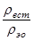
при 2 £ Н £ 3; Sн = (Н - 2)(1 - 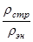
Sо = (3 - Н)(1 - ),
При Н > 3 м; Sн = (1 - ), Sо = 0 (4)
где rстр и rест - плотность талых грунтов тела насыпи и основания в строительный период;
rэн и rэо - плотность талых грунтов тела насыпи и основания в эксплуатационный период.
2.48. Запас по высоте насыпей следует назначать (при отсыпке в зимнее время) в случаях, если в верхнем сезонно-оттаивающем слое толщиной около 2 м, отсыпаны сухомерзлые или талые с примесью мерзлых комьев грунты и если насыпи высотой менее 2 м отсыпаны на мерзлые термопросадочные грунты основания. Величина запаса на высоту DН определяется по формуле
DН = Н(1 - ) + (2 - Н)(1 - ) (5)
2.50. Осадку грунтов основания насыпей высотой до 2 м, при проектировании линий в Северо-Восточном регионе СССР, Полярном Урале, Ямале и Западной Сибири можно назначать по данным приложения 10, составленного по фактическим замерам, применительно к ландшафтным комплексам, пересекаемых трассой. Границы последних следует устанавливать по данным ландшафтно-геоботанической съемки при изысканиях.
2.51. Минимальную высоту берм следует назначать исходя из условия сохранения под ними «новообразованной мерзлоты», а ширину принимают не менее 1 м, приложение 12, рис. 2.
2.52. На участках примыкания насыпей к искусственным сооружениям допускается (в отдельных случаях, по расчету) укладка вентилируемых труб с целью сохранения грунтов в мерзлом «новообразованном» состоянии. При этом конструкции земляного полотна разрабатываются по индивидуальному проекту.
2.53. При проектировании земляного полотна вдоль наземных или подземных коммуникаций нефте-газопроводов, водопровода, труб для производственных стоков в проекте следует разрабатывать мероприятия по защите грунтов земляного полотна от переувлажнения и возможных его деформаций в результате нарушения водно-теплового режима вечномерзлых грунтов.
2.54. Для отвода поверхностной воды от земляного полотна, устраиваемого на территории промышленного предприятии, а также на участках с небольшим залеганием подземных вод, в проекте должны предусматриваться дренажи с продольным уклоном дна 0,5 - 3 % с укладкой в них трубофильтров диаметром не менее 150 мм. При среднемесячной температуре наружного воздуха наиболее холодного месяца ниже 15 °С следует предусматривать утепление дренажей и лотков, приложение 12, рис. 9.
2.55. Крутизну откосов насыпей в проекте следует назначать:
1:1,5 - при сооружении их из среднезернистых песков;
1:1,75 - при возведении верхней части насыпы выше капиллярного поднятия - из мелких однородных пылеватых песков;
1:2 - при отсыпке нижней части насыпи на высоту капиллярного поднятия, - из среднезернистых песков, на сырых и мокрых основаниях из грунтов I и II категорий по термопросадочности;
1:3 - для нижней части насыпи, возводимой из пылеватых песков на сырых и мокрых грунтах III и IV по термопросадочности; для откосов насыпей высотой 1,5 - 3,0 м проектируемых из условия их снегозаносимости; на ландшафтах с льдонасыщенными грунтами (Л? > 0,4);
1:4 - 1:7 - для откосов снегонезаносимых выемок.
2.56. Откосы насыпей на участках пересечения трассой термокарстовых озер при расчетной длине разгона волны в водотоке более 0,5 м следует укреплять скальным грунтом или железобетонными плитами, укладываемые с гибким креплением по слою геотекстиля, выполняющего роль обратного фильтра, согласно приложения 15.
2.57. При проектировании земляного полотна в селитебных зонах или на территории промышленных предприятий, с заглубленным балластным слоем, на грунтах III и IV категорий термопросадочности, вдоль зданий и сооружений следует предусматривать замену грунта на дренирующий с надежным отводом воды из корыта с помощью трубофильтров и предотвращения инфильтрации воды в сторону фундаментов зданий и сооружений.
2.58. Участки, занятые термокарстовыми озерами, котловинами, с залеганием повторножильных льдов, бугристо-западинного микрорельефа, должны быть засыпаны местным грунтом или торфо-грунтовой смесью с соответствующим уплотнением.
2.59. Откосы насыпей, сооружаемые из мелких или пылеватых песков на неподтопляемых участках, рекомендуется укреплять торфо-грунтовой смесью толщиной 0,1 - 0,3 м. Состав смеси по массе в разрыхленном состоянии должен быть: торфа - 30 %, а суглинка - 70 %, или торфа - 40 % и песка - 60 %.
2.60. При укреплении откосов земляного полотна скальным, щебенистым, гравийно-галечниковым или дренирующим грунтом, толщину слоя торфо-грунтовой смеси назначают не менее 0,5 м, в зависимости от состояния и свойств грунтов слагающих откосы и с учетом принятой технологии укрепительных работ.
2.61. Выемки в грунтах III категории по термопросадочности (на ландшафтах со сливающейся мерзлотой), с заменой основания земляного полотна дренирующими грунтами (по расчету) и с откосами, покрытыми слоем торфа или пенопласта, прикрытых торфопесчаной смесью с засевом дикорастущими травами можно проектировать по приложению 12, рис. 5.
2.62. Выемки в грунтах I и II категорий термопросадочности с допущением осадки основания земляного полотна за счет частичного оттаивания вечномерзлых грунтов, с устройством полки на откосах и заоткосной призмы, с заменой грунта (по расчету) и покрытием откосов торфо-песчаной смесью и засевом дикорастущими травами можно проектировать по типовой конструкции, приложение 12, рис. 5 и 6.
2.63. Откосы выемок в твердомерзлых грунтах I и II категорий термопросадочности следует покрывать защитным слоем из талого, сыпучемерзлого или сухомерзлого песчаного грунта толщиной не менее 0,3 м с последующим закреплением торфо-грунтовой смесью или геотекстилем.
2.64. При необходимости сооружения выемок в льдонасыщенных грунтах, при коэффициенте льдистости более 0,4, следует проектировать замену их на сыпучемерзлые, сухомерзлые или талые пески на глубину сезонноталого слоя, определяемого по данным изысканий или по расчету, приведенному в СНиП 2.02.04-89, с теплоизолирующими слоями для регулирования положения «новообразованной» мерзлоты под основной площадкой земляного полотна.
2.65. В целях обеспечения снегонезаносимости выемок откосы должны проектироваться 1:5 ¸ 1:7 и защищены от термоэрозии слоем талого, сыпучемерзлого или сухомерзлого грунта толщиной не менее 0,2 м, с посевом дикорастущими травами.
2.66. Для укрепления откосов и бровок насыпей и выемок, сложенных мелкими пылеватыми песками или супесями, следует применять геотекстиль, которым прикрывают сверху дренирующим грунтом или торфо-грунтовой смесью и посевами из дикорастущих трав.
2.67. Нетканые синтетические материалы или геотекстили, применяются для укрепления земляного полотна, сооружаемого на вечномерзлых грунтах. Характеристики геотекстилей, применяющихся в дорожном строительстве, приведены в приложении 11.
2.68. Геотекстили применяются при проектировании земляного полотна в следующих целях:
1. Для повышения несущей способности грунтов основной площадки, согласно конструкции, приведенной в приложении 12, рис. 4.
2. Для усиления несущей способности слабых грунтов при сооружении насыпей на болотах, или при оттаивании вечномерзлых грунтов в основаниях III и IV категорий по термопросадочности.
3. Повышения надежности работы прослоек из влагоемких грунтов в конструкциях земляного полотна, рассчитанных на сохранение «новообразованной» мерзлоты, приложение 12, рис. 8.
4. Повышения устойчивости и равнопрочности узлов, сопряжений насыпей с искусственными сооружениями, а также земляного полотна, испытывающих повышенные динамические нагрузки, например, под стыками, стрелочными переводами, переездами.
5. Укрепления откосов, водоотводов и обочин, приложения 14 и 15.
6. Обеспечения долговечности и надежности работы балластной призмы и основной площадки, а также дренажных устройств, приложение 14.
7. В качестве противопучинной защиты земляного полотна.
8. С целью расширения области целесообразного применения, местных пылеватых и связных грунтов для сооружения земляного полотна.
9. Ускорения обезвоживания штабелей намывного грунта, подготавливаемого к разработке в зимнее время для сооружений насыпей.
10. Для ускорения стабилизации слабых и оттаивающих вечномерзлых грунтов основания насыпей.
11. Повышения темпов строительства и укладки верхнего строения пути в условиях дефицита балластных материалов.
2.69. Армированию и дренированию геотекстилями подлежат только талые или оттаивающие элементы грунтового массива земляного полотна.
2.70. Схемы размещения полотнищ геотекстиля проектируют исходя из наибольших растягивающих усилий (прочности на разрыв) в продольном направлении.
На участках земляного полотна, характеризуемых плоским на напряженно-деформируемым состоянием, рекомендуется поперечная схема размещения полотнищ без их скрепления друг с другом, но с взаимным перекрытием соседних полотнищ на 0,2 м.
На участках с повышенной деформативностью грунтов оснований применяются схемы с защемлением краев полотнищ геотекстиля в мерзлом грунте или вокруг упорных грунтовых призм.
При возведении насыпей высотой 1,5 - 3,0 м на слабых основаниях используют однослойные полотнища геотекстилей с разрывной прочностью не менее 0,3 МПа, определяемой по схеме испытаний на разрыв, защемленной в грунте мембраны.
2.71. Параметры прослоек при сооружении насыпей высотой более 4 м следует определять по расчету. Разрешается применять поярусное размещение прослоек геотекстилей через 2 - 4 м по высоте насыпи.
2.72. Технология укладки полотен геотекстиля и его укрепления изложена в «Технических указаниях по применению нетканых материалов для усиления земляного полотна», приложение 24.
2.73. Отвод поверхностной воды от насыпей следует предусматривать за счет естественного стока в пониженные места рельефа и устройства водопропускных сооружений.
Допускается устройство продольных водоотводных канав вдоль насыпей на расстоянии 5 - 10 м от их подошв, но только на участках грунтов I и II категорий по термопросадочности и продольном уклоне местности не более 0,004, с обязательным их укреплением геотекстилем, прикрытым песчано-гравийной смесью.
2.74. При достаточном обосновании на селитебных территориях и промышленных площадках допускается устройство железобетонных утепленных лотков, приложение 16, рис. 1, 2.
2.75. Подтопляемые участки насыпи следует проектировать из песчаных грунтов с содержанием фракций размером менее 0,1 мм не более 30 % или из талых глинистых грунтов с преобладанием каолинитовых и гидрослюдистых минералов над монтмориллонитовыми.
2.76. В качестве волнозащитных устройств, при скоростях продольных течений воды не более размывающих, допускается применять свободные пляжевые откосы с волнообразными продольными профилями, образующимися при свободном растекании гидросмеси при продольно-торцевых схемах намыва, а также с устройством баров с пологими откосами.
2.77. При проектировании волнозащитных откосов параметры волновых воздействий, назначаемых по СНиП 2.08.03-82, допускается определять за расчетный интервал времени, равный времени естественного зарастания пляжевых откосов растительностью. Для кочковато-серниковой тундры это составляет 10 - 15 лет, а мохово-лишайниковой - 25 - 30 лет; для всего арктического побережья - 100 лет.
2.78. Для ускорения зарастания пляжевых откосов в проекте следует предусмотреть работы по их биологическому залужению с известкованием почв и внесением удобрений, а затем засевом дикорастущими травами. Пляжевые откосы намывают по схемам со свободным откосом без планировки и разрушения бульдозерами образующейся при намыве волнообразной поверхности намывного откоса в зоне подтопления. Ширину регуляционных дамб назначают не менее 3 м поверху.
2.79. При высоте подтопления более 2 м следует проектировать бермы с откосами 1:3 - 1:4, укрепленные матами из геотекстиля или железобетонными плитами, уложенными по слою геотекстиля. Допускается устройство берм из привозного скального или валунно-галечного грунта, приложение 15.
2.80. Мосты и трубы рекомендуется проектировать по СНиП 2.05.03-84, с учетом указаний СНиП 2.02.84-89, ВСН 61-89 и ВСН 203-85.
2.81. Временную нормативную нагрузку следует назначать по СНиП 2.05.0.3-84. Для пролетных строений длиной до 33 м временную нагрузку допускается принимать C-10.
2.82. Мосты, трубы и пойменные насыпи следует рассчитывать на воздействие ветрового и водного потоков и ледовых нагрузок как для промышленных путей IV категории.
2.83. На участках с залеганием грунтов III и IV категорий по термопросадочности, или подземных льдов, наличия наледей, солифлюкционных процессов, проект моста разрабатывается индивидуально.
2.84. В случае залегания в основаниях опор моста твердомерзлых грунтов с суммарной влажностью более 22 % и температурой грунтов ниже 3° С проектирование возможно по первому принципу строительства.
При температуре вечномерзлых грунтов под опорами моста выше 3 °С рекомендуется разрабатывать охлаждающие установки по расчету.
2.85. При проектировании опор моста по второму принципу низ свай, или свай-оболочек следует опирать на грунты с относительной осадкой при оттаивании не более 0,03.
2.86. Контроль за изменением температуры грунтов под опорами мостов должен осуществляться с помощью автоматизированных замеров электротермическими установками за 10 - 15 лет их эксплуатации.
2.87. На малых водотоках рекомендуется проектировать бесфундаментные трубы из стальных некондиционных газовых труб диаметром по расчету и с антикоррозионной защитой из геотекстилей и пенопласта. По торцам труб следует предусматривать снегозащитные обустройства.
2.88. Для защиты металлических водопропускных труб от коррозии следует рекомендовать ленточную изоляцию, применяемую при укладке нефтегазопроводов по указаниям главы СНиП 2.05.06-85.
2.89. При проектировании малых и средних однопролетных мостов следует применять железобетонные пролетные строения длиной 11,5 м и менее, а также стальные длиной 13,5 м и более. В первом случае допускаются распорные конструкции по утвержденным МПС проектам.
2.91. При сооружении земляного полотна следует применять одноэтажную и двухэтажную технологическую схему, приведенные в приложении 23.
2.92. При использовании в насыпи сыпучемерзлых грунтов (см. п. 2.34) допускается применять уплотнительные машины конструкций, приведенные в ВСН 186-75, а сухомерзлых - решетчатые катки и вибрационную технику.
Толщину уплотняющих слоев назначают 0,5 - 1,2 м в зависимости от характеристик машин и количества проходок.
2.93. Нижнюю часть насыпи рекомендуется назначать из твердомерзлых грунтов с последующим оттаиванием и уплотнением летом, а верхнюю часть досыпать из талых, сухомерзлых или сыпучемерзлых грунтов в последующий зимний сезон.
Толщина слоя из твердомерзлого грунта в насыпи, отсыпаемой зимой не должна превышать глубины сезонного оттаивания грунтов на данном ландшафте по приложению 17.
2.94. Объем твердомерзлого грунта в буртах для возведения насыпей должен быть принят в проекте равным 60 - 120 % от профильных объемов на данном участке трассы. Высота буртов из твердомерзлого грунта не должна превышать расчетной глубины сезонного оттаивания грунтов на ландшафте. Расчетная толщина оттаявшего слоя грунта срезаемого бульдозером должна быть не менее 0,3 м. Приобъектные бурты должны разрабатываться на 0,4 - 0,5 м выше естественной поверхности земли.
2.95. Насыпи высотой менее 3 м отсыпают по двухэтапной схеме, приложение 23, на грунтах первой и второй категорий по термопросадочности. Допускается заготовка твердомерзлых грунтов в бурты в зимний период.
2.96. Насыпи на грунтах III и IV категорий по термопросадочности, сооружаемые в летний период разрешается отсыпать методом «тропы», толщиной слоя 1,0 - 1,2 м и шириной равной расчетной ширине поверху, а также способом «с головы» без запаса на увеличение высоты за счет осадки грунтов основания в строительный период, определяемой по приложению 10.
2.97. Насыпи высотой более 3 м сооружаемые в зимний период методом «с головы» рекомендуется отсыпать способом «тропы» с толщиной слоя 0,7 - 1,0 м по всей проектной ширине подошвы насыпи.
2.98. Засыпку пазух около водопропускных труб выполняют талыми, сухомерзлыми и сыпучемерзлыми грунтами с соответствующим уплотнением.
2.99. Твердомерзлые грунты допускается разрабатывать летом при их температуре выше минус 0,3 °С, с применением тяжелых тракторных рыхлителей с дисковыми уширителями, а при температурах ниже 0,3 °С - буровзрывным способом по указаниям РСН 303-78, приложение 24.
2.100. Оттаявший в буртах грунт должен быть выдержан 1 - 3 суток для обезвоживания до влажности 14 - 15 % и может быть после этого использован для возведения насыпей в зимний период. Бурты в этом случае должны быть покрыты термоизоляционным материалом.
2.101. Гидромеханизацию следует применять только в случае необходимости получения дефицитного дренирующего грунта из подрусловых отложений. Разрешается намывать высокие насыпи на подходах к мостам.
2.102. Намыв буртов грунта рекомендуется по схеме обезвоживания за счет лучевых дрен из геотекстиля и вакуумирования через водосборные колодцы, с «отдыхом» карт намыва и обработкой тракторами.
Для продления сезона работы земснарядов разработку грунтов в мае - октябре следует вести из-под льда без устройства открытой майны.
2.103. Содержание комьев мерзлых грунтов крупнее 25 см должно быть не менее, по приложению 8.
2.104. Разработки резервов местных грунтов в полосе отвода земель запрещается.
2.105. Консистенцию и суммарную влажность грунтов в резервах можно назначать по табл. 2.2.
3.1. Тип и выбор параметров верхнего строения пути следует устанавливать в зависимости от осевой нагрузки подвижного состава и объема перевозок по табл. 3.I.
3.2. При проектировании нового или реконструкции действующего верхнего строения пути, в районах распространения вечномерзлых грунтов, железобетонные шпалы укладывать не рекомендуется.
3.3. В качестве балласта следует применять песок или песчано-гравийную смесь отвечающих требованиям ГОСТ 7394-85К, металлургический шлак, отходы асбестового производства по требованиям ГОСТ 84580-81, а также дробильно-сортировочные материалы, удовлетворяющие требованиям технических условий на балласт и щебень по ГОСТ 7392-75.
3.4. В качестве материала для двухслойного балласта следует использовать щебеночный или асбестовый, укладываемый на подушку из песка или гравийно-песчаной смеси.
3.5. Передвижные пути в карьерах следует укладывать на щебеночном, гравийном или песчаном балластах, а также из гравийно-песчаной смеси, металлургическом шлаке и других отходах производства. При этом толщина балластного слоя под шпалой должна быть не менее 20 см.
3.6. Толщину балластного слоя под шпалой, на путях с заглубленной и полузаглубленной балластной призмой, надлежит назначать на 5 - 10 см больше предусмотренного расчетом, в зависимости от увлажнения грунта корыта земляного полотна.
3.7. На земляном полотне из скальных, крупнообломочных и песчаных грунтов, кроме мелких и пылеватых песков, все виды балласта можно укладывать без подушки. При этом толщина балласта под шпалой должна быть не менее 20 см.
3.8. При устройстве подушки из карьерного гравия, толщину слоя щебня или асбеста следует уменьшать на 5 см без сокращения общей толщины балластной призмы.
3.9. Ширина балластной призмы поверху на прямых однопутных участках должна быть 3,1 м. На кривых участках пути балластная призма должна назначаться с учетом возвышения наружного рельса, при сохранении под внутренним рельсом толщины балластного слоя, установленного для прямых участков; на участках пути радиусом менее 600 м ее следует уширять с наружной стороны на 0,1 м, а при числе путей более одного на величину между путного расстояния.
3.10. Крутизну откосов балластной призмы при всех видах балласта следует назначать в проекте 1:1,5, а подушки - 1:2.
3.11. Поверхность балластной призмы должна быть на 3 см ниже поверхности деревянных шпал.
Поверхность асбестовой балластной призмы на прямых однопутных участках должна быть спланирована с уклоном 7 - 8 % от оси пути в сторону обочин для обеспечения стока поверхностных вод. Для двухпутных участков такие же уклоны следует предусматривать от оси междупутья.
Междупутья при расстоянии между осями смежных путей до 6,5 м следует заполнять балластом.
Поверхности балласта между торцами шпал смежных путей придается поперечный уклон в соответствии с поперечным уклоном поверхности земляного полотна.
3.12. На приемоотправочных и станционных путях, по которым не намечается безостановочный пропуск поездов, а также сортировочных, вытяжных, погрузочно-разгрузочных и других всех назначений, толщина балласта должна быть на 5 см менее указанной в табл. 3.I.
3.13. В случае проектирования земляного полотна на грунтах III и IV категорий по термопросадочности, для обеспечения устройств верхнего строения пути следует предусматривать новые рельсы 1-го сорта, а на грунтах I и II категорий - новые рельсы 2-го сорта.
3.14. Для путей сортировочных горок, считая от их вершин до конца кривых, в голове парка, в проекте следует предусматривать новые рельсы не легче типа Р50 с числом шпал 1840 шт. на 1 километр пути.
3.15. Для передвижных путей (в карьерах), в проекте надлежит предусматривать укладку старогодных рельсов типа Р65 (С) I и II групп годности на деревянных шпалах с эпюрой 1840 шт. на 1 км пути при условии устойчивого основания (I и II категории грунтов по термопросадочности) и с числом шпал 2000 шт. на 1 км пути - при неустойчивом основании, когда земляное полотно сооружается на грунтах III и IV категорий по термопросадочности.
3.16. Для постоянных путей, на кривых участках радиусом менее 250 м, следует укладывать контррельс с внутренней рельсовой нити, а в кривых радиусом 300 и менее метров - предварительно гнутые рельсы.
3.17. При обращении на путях подвижного состава с осевыми нагрузками до 230 кН и объеме перевозок до 10 млн. т брутто в год, следует применять деревянные шпалы II типа, а при большем объеме перевозок - I типа.
Деревянные шпалы I типа следует применять при обращении на путях подвижного состава с осевыми нагрузками св. 290 кН, а с осевой нагрузкой св. 230 до 290 кН допускается только с технико-экономическим обоснованием.
Таблица 3.1
Типы и выбор параметров верхнего строения пути в зависимости от осевой нагрузки подвижного состава, кН, и объема перевозок
|
до 230 |
230 - 290 |
св. 290 |
||||||
|
Объем перевозок, млн. т брутто в год |
||||||||
|
до 5 |
св. 5 до 10 |
св. 10 до 25 |
св. 25 |
до 5 |
св. 5 до 10 |
св. 10 |
до 10 |
|
|
Тип рельсов |
Р50 (С) |
Р65 (С) |
Р50 |
Р65 |
Р65 (С) |
Р50 |
Р65 |
Р65 |
|
Число шпал на 1 км пути |
1600 |
1600 |
1840 |
1840 |
1600 |
1840 |
1840 |
1840 |
|
Толщина балластного слоя под деревянной шпалой, см: |
||||||||
|
однослойного |
25 |
25 |
30 |
30 |
30 |
|||
|
двухслойного |
25/20 |
25/20 |
25/20 |
|||||
Примечания: 1. Буквой (С) указаны типы старогодных рельсов I и II групп годности с допустимым износом согласно действующим техническим условиям на рельсы старогодные для железных дорог широкой колеи.
2. Число шпал указано для прямых участков пути и кривых радиусом 350 м и более.
3. Над чертой указана толщина верхнего слоя балласта, а ниже - толщина подушки.
3.18. Деревянные шпалы должны быть пропитаны антисептиками, а на участках с электрической тягой, оборудованных рельсовыми цепями - должны быть пропитаны антисептиками не проводящими электрического тока. Концы деревянных шпал должны быть предохранены от растрескивания.
Между деревянными шпалами и подкладками должны укладываться прокладки из морозоустойчивых материалов - гомбелита, резины или резинокорда.
3.19. На кривых участках пути радиусом менее 350 и 600 м, в случае устройства земляного полотна на грунтах III - IV категорий по термопросадочности, число шпал на 1 км пути должно быть увеличено по сравнению с участками I и II категорий с 1840 и 1600 до соответственно 2000 и 1840 шт.
3.20. Стрелочные переводы и глухие пересечения должны иметь марки крестовин не круче указанных в табл. 3.2.
3.21. На путях обращения специального подвижного состава, не указанных в табл. 3.2, марку крестовин назначают в каждом случае в зависимости от длины его жесткой базы.
3.22. В необходимых случаях следует иметь эпюры и конструкции, отвечающие требованиям электрической централизации. Укладка глухих пересечений допускается только на участках распространения грунтов I и II категорий по термопросадочности и нагрузках свыше 230 кН.
3.23. Тип рельсов стрелочных переводов, как правило, должен соответствовать типу рельсов укладываемых в путь.
Основания под стрелочными переводами должны соответствовать рельсовому основанию примыкающих звеньев путей.
Таблица 3.2
Марки крестовин на стрелочных переводах
|
Обыкновенные |
Перекрестные |
Симметричные |
Глухие пересечения |
|
|
Пути приема и отправления поездов и пути следования сцепов с длинномерными грузами |
1/9 |
1/9 |
1/6 |
2/9 |
|
Подгорочные пути |
1/9 |
1/6 |
||
|
Прочие станционные и погрузочно-разгрузочные пути, кроме специальных и передвижных |
1/7 |
1/7 |
1/4,5 |
2/6 |
|
Передвижные пути карьеров и отвалов |
1/9 |
1/9 |
1/6 |
2/9 |
Примечание: Более крутые марки крестовин допускается применять, если радиусы их переходных кривых не менее принятых для пути, на котором укладывается стрелочный перевод.
3.24. Стрелочные переводы и стрелочные улицы, оборудуемые электрической централизацией, а также стрелочные переводы в голове сортировочных парков и подгорочных путей в пределах тормозных позиций, надлежит укладывать на щебеночном или асбестовом балластах с обеспечением водоотвода и, как правило, с механизированной очисткой стрелочных переводов от снега, мусора и пыли.
3.25. Железнодорожные тупики на станциях, погрузочно-разгрузочных фронтах и в зданиях цехов, должны оборудоваться упорами, предохраняющими сход подвижного состава с путей.
3.26. Предельные столбики должны устанавливаться в местах, где расстояние между осями сходящихся путей составляет не менее 4100 мм, а на перегрузочных путях не менее 3600 мм. На кривых участках пути указанные расстояния надлежит увеличивать в соответствии с требованиями ГОСТ 9238-83.
3.27. На путях, расположенных на уклонах свыше 1,5 ‰, должна предусматриваться установка противоугонов, а свыше 10 ‰ на каждой шпале.
3.28. На подходах к мостам и путепроводам с безбалластным пролетным строением, во всех случаях, независимо от продольного профиля пути и условий движения, должно быть предусмотрено закрепление пути от угона.
4.1. При проектировании дорог промышленных предприятий следует учитывать дорожно-климатические зоны, в которых они расположены, согласно приложения 1, в том числе для северной зоны и ее трех подзон, с соответствующими природными характеристиками, приведенными в ВСН 46-83 и СНиП 2.05.02-85.
4.2. С целью учета температурного режима земляного полотна и дорожных сооружений при проектировании рекомендуется руководствоваться схематической картой распространения вечномерзлых грунтов на территории СССР с изотермами на глубине 10 м, приложение 2.
Для получения сведений о глубине сезонного оттаивания грунтов следует руководствоваться приложениями 3 и 4, а также 17.
4.3. Элементы плана и продольного профиля необходимо назначать согласно указаний СНиП 2.05.02-85, инструкции ВСН 84-89 и ВСН 204-85, а также рекомендаций по охране природной среды, приведенных в главе 6 Пособия.
Профили дорог, предназначенные для обустройства газовых и нефтяных промыслов, должны проектироваться согласно Инструкции ВСН 26-80.
4.4. При камеральном и полевом трассирования дорог следует обходить участки со сложными геокриологическими условиями (солифлюкция, термокарст и другие) с учетом природных особенностей и характеристик ландшафтов, приведенных в приложении 17, в том числе снегозаносимости.
4.5. При проектировании земляного полотна следует учитывать принципы строительства на вечномерзлых грунтах, приведенные в п. 2.17 настоящего Пособия.
4.6. Конструкции земляного полотна должны разрабатываться на основе данных инженерно-геологических и геокриологических изысканий с учетом технико-экономических сравнений вариантов по минимуму суммарных приведенных затрат.
4.7. При районировании трассы на участки следует выделять типы местности согласно условий по увлажнению грунтов и характеру поверхностного стока, приведенных в табл. 4.1 по ВСН 46-83, или определить границы ландшафтов по трассе согласно характеристик приведенных в приложении 17.
В пределах выделенных типов местности следует применять один принцип строительства, за исключением участков нулевых мест.
4.8. По типовым решениям принимаются конструкции земляного полотна, приведенные в приложении 13, рис. 1 - 8, а индивидуальному - участки, предусмотренные в п. 2.33 настоящего Пособия.
Таблица 4.1
Типы местности по условиям увлажнения и характеру поверхностного стока, по ВСН 46-83
|
Условия увлажнения грунтов и характер поверхностного стока |
Характерные признаки |
|
|
1 |
2 |
3 |
|
I - сухие места |
Без избыточного увлажнения; поверхностный сток обеспечен |
Каменистые возвышенности, крутые склоны сопок, песчаные и гравийно-галечные косы; сезонно-оттаивающий слой более 2,5 м. Грунты гравийно-галечниковые, песчаные. Супесчаные и глинистые непросадочные с влажностью Wотн < 0,77. |
|
II - сырые места |
Избыточное увлажнение в отдельные периоды года; поверхностный сток не обеспечен |
Плоские водоразделы, пологие склоны гор и их шлейфы с мощностью сезоннооттаивающего слоя 1,0 - 2,5 м. Грунты глинистые просадочные с влажностью Woтн = 0,77 ¸ 1,0. |
|
III - мокрые места |
Постоянное избыточное увлажнение. Водоотвод не обеспечен. Надмерзлотные воды и длительно стоящие (более 20 суток) поверхностные воды |
Заболоченные тальвеги, мари, замкнутые впадины с развитым мохо-торфяным покровом и до 1 м сезоннооттаивающим слоем. Грунты глинистые сильно просадочные с Wотн > 1, содержащие в пределах двойной мощности сезоннооттаивающего слоя линзы льда толщиной более 10 см. |
4.9. Оптимальную высоту насыпей назначают на основе теплотехнического расчета, приведенного в ВСН 84-89, по методике помещенной в СНиП 2.02.04-89, с учетом запаса по высоте на осадку, определяемую по п. 2.48, формуле 5 и дополнительной высоте на снегозаносимость по приложению 18.
4.10. Проектирование земляного полотна на участках (ландшафтах) с глубоким залеганием верхней границы вечной мерзлоты (приложение 17), но не менее 3 м, а также в местах залегания с поверхности скальных и крупнообломочных грунтов, проектируется по нормам СНиП 2.05.02-85 применительно ко II дорожно-климатической зоне.
4.11. При проектировании насыпей из песчаных и крупнообломочных грунтов, без теплоизоляции, возвышение поверхности покрытия над уровнем земли при строительстве по I и II принципам, принимаются по табл. 4.2.
Таблица 4.2
Возвышение поверхности покрытия дороги над уровнем земли, при принципах строительства, м
|
Первый |
Второй |
|
|
65 |
3.5 - 3.3 |
2.7 - 2.4 |
|
67 |
2.7 - 2.5 |
2.0 - 1.7 |
|
69 |
2.4 - 2.2 |
1.6 - 1.4 |
|
71 |
2.0 - 1.8 |
1.3 - 1.0 |
|
Примечание: меньшие значения применяются для асфальтобетонных, а большие - для цементобетонных покрытий. |
||
4.12. При проектировании земляного полотна по первому принципу строительства рекомендуется для сохранения «новообразованной» мерзлоты применять в конструкциях пенопласт различных марок, укладываемого в основаниях, толщиной приведенной в табл. 4.3, либо по приложению 22.
Типовые конструкции земляного полотна с применением пенопласта приведены в приложении 13, рис. 2.
Таблица 4.3
Марки пенопласта и его толщина, применяемого при высотах Нн насыпей, см
|
ПС-1 |
ПС-4 |
ПС-5 |
ПС-18 |
ПС-254 |
ПСБ-СГ |
|
|
2.5 |
4.5 |
4.5 |
5 |
3 |
6 |
7 |
|
2.0 |
6.0 |
6.0 |
7 |
4 |
8 |
9 |
|
1.5 |
8.0 |
8.0 |
9 |
6 |
10 |
12 |
|
1.0 |
10.0 |
10 |
12 |
8 |
12 |
15 |
4.13. Для обеспечения устойчивости земляного полотна при разработке его конструкций следует применять геотекстили, характеристики которых приведены в приложении 11, а условия их применения в типовых поперечных профилях приведены в приложении 13, рис. 3.4.
4.14. Строительную осадку грунтов основания насыпей, в зависимости от типа местности, относительной влажности грунтов и коэффициенты консистенции можно определять по табл. 4.4, либо по указаниям приложения 10.
Таблица 4.4
Строительная осадка грунтов основания насыпи, см
|
Относительная влажность грунтов основания от предела текучести, в долях единицы |
Коэффициент консистенции грунтов по ГОСТ 25100-82 |
Грунты основания насыпи |
Строительная осадка грунтов основания насыпей |
|
|
I -сухие места |
< 0,77 |
0,5 |
Глина пылеватая Суглинок пылеватый Супесь легкая Песок пылеватый |
10 6 5 4 |
|
II - сырые места |
0,77 ¸ 1,0 |
0,5 - 1,0 |
Глина пылеватая Суглинок пылеватый Супесь легкая Песок пылеватый |
20 15 10 6 |
|
III - мокрые места |
1,0 |
1,0 |
Глина пылеватая Суглинок пылеватый Супесь тяжелая Песок пылеватый |
30 20 15 10 |
4.15. Ширину основной площадки земляного полотна можно назначать расчетом по формулам, приведенным в п. 2.47, а запас по высоте насыпи в п. 2.49.
4.16. Конструкции земляного полотна следует проектировать исходя из категории по термопросадочности мерзлых грунтов при оттаивании и свойств грунтов для возведения насыпей и устройств выемок.
Типовые конструкции земляного полотна автомобильных дорог приведены в приложении 13, рис. 1 - 8.
4.17. Насыпи высотой более 1,5 м на вечномерзлых грунтах IV и V категорий по термопросадочности (приложение 7) из дренирующих грунтов, но первому принципу строительства, с бермами и утеплителем откосов из торфа, приведены в приложении 13, рис. 1.
4.18. Конструкция насыпи высотой более 1,5 м на вечномерзлых грунтах IV и V категорий термопросадочности предусматривает укладку в основании пенопласта, или берму из торфа, добываемого на месте из резервов, с соответствующей воздушной просушкой до влажности 5 - 10 % по массе, приложение 13-2.
4.19. Конструкция насыпи высотой более 1,5 м на грунтах III, IV и V категорий по термопросадочности из талых, сыпуче- или сухомерзлых песчаных грунтов с применением геотекстиля, укладываемого в продольном направлении оси дороги в виде двух слоев на выровненный песчаный слой и выше через слой грунта мощностью 0,5 - 0,7 м, приведена в приложении 13-3.
4.20. Конструкция насыпи высотой более 1,5 м на грунтах III категории по термопросадочности, из сухих талых сыпуче- или сухомерзлых песчаных грунтов, с устройством в нижней части обоймы из геотекстиля мощностью 0,5 м, приведена в приложении 13, рис. 4, а на грунтах IV и V категорий с устройством обоймы из геотекстиля с заключением глинистых грунтов, мощностью 0,5 - 1,0 м, приведена в приложении 13, рис. 5.
4.21. Конструкция насыпи высотой более 1,5 м на грунтах II и III категорий по термопросадочности разработана с отсыпкой из дренирующих и суглинистых грунтов и рассчитана на осадку основания насыпи, приведена в приложении 13, рис. 6.
4.22. Конструкции насыпей на застраиваемой территории, на грунтах III - V категорий по термопросадочности с заменой грунтов на дренирующие и термоизоляцией, приведены в приложении 13, рис. 7 и 13, рис. 8.
4.23. Конструкции земляного полотна на планируемой территории, без кюветов, с дренажными трубами, и без них, с выпуском воды в ливневую канализацию, по принципу предварительного оттаивании вечномерзлых высокотемпературных грунтов (выше -0,5 °С), приведены в приложении 14, рис. 1 и 14, рис. 2.
4.24. Конструкции земляного полотна на границе планировки территории промышленного предприятия или террасы в выемке (насыпи), с укладкой железобетонных лотков и трубофильтров, с выпуском воды в ливневую канализацию, приведены в приложениях 14, рис. 3 и 14, рис. 4.
4.25. Конструкции откосов укрепленных неткаными синтетическими материалами - геотекстилями (неподтопляемые откосы, обводненные выемки, подтопляемые откосы), приведены в приложении 15, а конструкции дренажей - в приложении 16.
4.26. Грунты как основания земляного полотна классифицируются по термопросадочности на пять категорий: непросадочные, малопросадочные, просадочные, сильнопросадочные и чрезмернопросадочные и отличаются по показателю относительной просадочности, льдистости и суммарной влажности, приложение 7 и должны учитываться при разработке конструкций земляного полотна.
4.27. Относительную осадку грунтов при оттаивании, с учетом минимального коэффициента уплотнения, условий разработки, содержанию мерзлых комьев крупнее 25 см, можно определять по приложению 8. Для насыпей высотой до 2,5 м при отсыпке их зимой, эти значения должны быть понижены на 20 %.
4.28. Требования к вечномерзлым грунтам для сооружения земляного полотна автомобильных дорог приведены в приложении 6, а оценка по степени цементации льдом и по льдистости в приложении 9.
5.1. Дорожные одежды должны проектироваться согласно СНиП 2.05.07-85, Инструкций ВСН 84-89, ВСН 46-83, ВСН 197-83 и Пособия, разработанного Союзпромтрансниипроектом по земляному полотну, приложение 24.
5.2. Тип покрытия должен назначаться на основе технико-экономического обоснования и транспортно-эксплуатационных требований, определяющих по указаниям ВСН 26-80 с учетом, как правило, отсутствия стройиндустрии и небольшую интенсивность движения. Рекомендуются следующие типы дорожных одежд: цементобетонные (монолитные и сборные), железобетонные (монолитные и сборные), асфальтобетонные.
5.3. Покрытия рекомендуется изготовлять:
из щебня, обработанного битумом или битумной эмульсией методом смешения в установке, методом пропитки с устройством поверхностной обработки;
из гравийно-песчаных и щебеночно-песчаных смесей, обработанных органическими или неорганическими вяжущими методом смешения в установке или на дороге с устройством поверхностной обработки;
из щебня (гравия), обработанного в верхней части пескоцементной смесью, белитовым шламом, высокоактивным либо активным гранулированным шлаком с поверхностной обработкой;
из гравийно-песчаных, щебеночно-песчаных смесей, малопрочных каменных материалов, отходов камнедробления, отходов горнорудных предприятий, металлургических шлаков, белитового шлама и т.п. материалов.
5.4. Цементобетонные и железобетонные покрытия (монолитные и сборные) надлежит применять на внутренних автомобильных дорогах промышленных предприятий I-В, II-В, I-К, II-К и I-Л категорий.
Сборным железобетонным покрытиям следует отдавать предпочтение на внутренних автомобильных дорогах всех категорий и в районах с дефицитом каменных материалов, при сжатых сроках строительства, а также в сложных мерзлотно-грунтовых условиях.
Сборные покрытия из предварительно напряженных железобетонных плит типа ПАГ-14 и ПДН необходимо проектировать, при двухстадийном строительстве дорожной одежды.
Предпочтение следует отдавать устройству переходных покрытий из материалов, обладающих способностью омоноличивания и пропускать движение сразу же после их уплотнения, например, белитовый шлам и укрепленные им каменные материалы, а также высокоактивный и активные доменные ишаки.
Сборные покрытия из ненапряженных железобетонных плит следует проектировать только на участках дорог с небольшим движением автотранспорта.
5.5. Облегченные типы дорожных одежд надлежит проектировать по санитарным нормам, предъявляемым к промышленным производствам, при этом не могут быть допущены одежды переходного типа.
Переходные покрытия из белитового шлама должны иметь защитный слой толщиной 3 - 5 см из отходов камнедробления, дресвы и других материалов.
На второй стадии переходные покрытия с учетом их эксплуатационного состояния могут быть использованы в качестве основания под сборные железобетонные или асфальтобетонные покрытия.
5.6. Основания дорожных одежд проектируют: цементобетонные (монолитные и сборные), асфальтобетонные (из высокопористого асфальтобетона), из щебеночных, гравийных, песчаных материалов (каменных материалов) и отходов промышленности, необработанных и обработанных неорганическими и органическими вяжущими материалами, из крупнообломочных, песчаных и глинистых грунтов, укрепленных неорганическими и органическими вяжущими материалами; щебеночные (гравийные), обработанные в верхней части пескоцементной смесью, белитовым шламом, высокоактивным либо активным гранулированным шлаком.
5.7. В необходимых случаях разрешается проектировать дополнительные слои оснований покрытий из песка, гравия, геотекстиля, отходов промышленности и других материалов. В зависимости от конкретных условий дополнительный слой может быть тепло- или гидроизолирующим, морозозащитным, дренирующим, капилляропрерывающим или выравнивающим.
5.8. Для обеспечения контакта плит сборных покрытий с основанием из укрепленных материалов в проекте, необходимо предусмотреть выравнивающий слой толщиной до 5 см из смеси песка с цементом в отношении 8:1 по массе, или из белитового шлама.
На основаниях из неукрепленных материалов допускается применять выравнивающий слой из песка толщиной 10 - 20 см с укладкой поверх него геотекстиля, характеристики которого приведены и приложении 11.
На поверхность неукрепленного песчаного основания дорог категорий III-В, IV-В, III-Л и IV-Л разрешается укладывать полосы геотекстиля шириной не менее 75 см в местах расположения продольных и поперечных швов сборного покрытия.
На дорогах категорий II-В, II-К, I-Л со сборным покрытием допускается песчаное основание в обойме из геотекстиля, с толщиной слоя в обойме не менее 30 см.
5.9. Для обеспечения продольной устойчивости сборного покрытия расстояние между швами расширения, в зависимости от температуры воздуха в момент укладки плит, назначают по табл. 5.1.
Таблица 5.1
Расстояния между швами расширения, при температуре воздуха, °0, в период укладки плит
|
Менее 10 °С |
10 - 20 °С |
Более 20 °С |
|
|
10 |
42 |
60 |
102 |
|
20 |
78 |
102 |
180 |
Для вертикальной устойчивости покрытия в местах расположения швов расширения, при устройстве оснований из неукрепленных материалов, надлежит предусматривать поперечные полосы (подшовные подушки) из укрепленных материалов, белитового шлама или сборного железобетона. При этом размеры подшовной подушки должны быть шириной 1 м и толщиной, равной толщине основания.
При использовании плит со стыковым соединением камерного типа, обеспечивающим горизонтальное перемещение плит в поперечных швах, подшовные подушки предусматривать не следует.
5.10. Конструирование и расчет дорожных одежд жесткого типа под транспортные средства с осевыми нагрузками до 100 кН (10 тс) выполняются по нормам ВСН 197-83 и ВСН 139-80, а более 100 кН по СНиП 2.05.08-85, а дорожных одежд нежесткого типа по ВСН 46-83 и ВСН 197-83.
5.11. Толщину асфальтобетонного покрытия, укладываемого на основании из материалов укрепленных неорганическими вяжущими, а также на сборном основании из железобетонных плит, следует принимать не менее 10 см. В местах расположения швов сборного основания необходимо предусматривать укладку геотекстиля или сетку из стекловолокна шириной 0,75 - 1,0 м.
5.12. При расчете дорожных одежд со слоями из белитового шлама и каменных материалов, укрепленных белитовым шламом, ориентировочные расчетные значения модуля упругости и прочности на растяжение при изгибе белитового шлама в зависимости от его активности (предел прочности образцов при сжатии через 90 суток нормального твердения) следует принимать согласно табл. 5.2.
Таблица 5.2
Расчетные характеристики белитового шлама, МПа
|
Модуль упругости |
Прочность на растяжение при изгибе |
|
|
Свыше 5 (высокоактивный) |
1000 |
1,2 |
|
2,5 - 5 (активный) |
1000 |
1,0 |
|
1 - 2,5 (малоактивный) |
300 |
0,3 |
5.13. При обработке верхней части слоя из щебня или гравия белитовым шламом ориентировочные расчетные значения модуля упругости следует принимать в зависимости от глубины обрабатываемого слоя по табл. 5.3.
Большие значения принимают при обработке щебня карбонатных пород 1 - 3 классов прочности, меньшие - щебня прочих пород 1 - 3 классов и карбонатных 4 класса прочности.
Таблица 5.3
Модули упругости щебня и гравия, обработанного в верхней части слоя, МПа
|
Из щебня |
Из гравия |
|
|
0,25 |
350 - 400 |
260 |
|
0,50 |
450 - 500 |
340 |
|
0,75 |
550 - 600 |
410 |
5.14. Материалы для устройства дорожных покрытий, оснований и дополнительных слоев оснований должны удовлетворять требованиям соответствующих ГОСТ, СНиП и технических условий, а также рекомендаций настоящего Пособия.
5.15. Для обеспечения требуемой морозостойкости дорожного бетона в условиях Крайнего Севера следует принимать цементы высоких марок при обязательном использовании воздухововлекающих добавок (абиетат натрия, мылонафт, асидол-мылонафт и др.).
Для приготовления цементобетонной смеси, при устройстве монолитных покрытий и оснований следует применять крупные, средние и мелкие пески с содержанием зерен размером менее 0,14 мм не более 10 %. При соответствующем технико-экономическом обосновании можно использовать пески (в том числе и очень мелкие) с содержанием зерен размером менее 0,14 мм не более 20 % по массе, в составе бетонной смеси необходимо применять комплексные (пластифицирующие и воздухововлекающие или газообразующие) добавки поверхностно-активных веществ (ПАВ).
5.16. Расчетные характеристики укрепленного материала приведены в табл. 5.4; расчетные температуры дорожных покрытий в табл. 5.5, а рекомендуемые марки битума для дорожно-климатических подзон и категорий дорог в табл. 5.6.
5.17. Для устройства однослойных и верхних слоев двухслойных асфальтобетонных покрытий в I - III подзонах предпочтение надлежит отдавать смесям с более плотным составом, содержащим меньше щебня.
На дорогах III, II-В, III-В, IV-К, IV-К и I-Л категорий в этих подзонах целесообразно применять в качестве вяжущего битумные эмульсии.
5.18. В III и IV подзонах со значительной продолжительностью теплого периода на дорогах III-В, IV-В и III-Л категорий при стадийном строительстве допускается устраивать покрытия из холодных асфальтобетонных смесей, приготовленных по способу смешения на дороге с использованием битумов марок СГ 70/130; МГ 70/130; СГ 40/70 и МГ 40/70.
5.19. Для облегченных типовых дорожных одежд с покрытиями, устраиваемыми способом пропитки на дорогах III, IV, II-В, III-В, III-К, II-К, IV-К, II-Л и III-Л категорий, а также оснований, следует применять среднераспадающиеся битумные эмульсии (катионные и анионные); в районах с более продолжительными тепловыми периодами (III и VII подзоны) допускается применение битума марки БНД 130/200.
5.20. Покрытия, устроенные по способу смешения на дороге и пропитки, подлежат поверхностной обработке с использованием битумов марок БНД 130/200 и БНД 200/300 (в III и VII подзонах) и прямых средне- и быстрораспадающихся катионных битумных эмульсий.
5.21. В составе асфальтобетонных смесей, применяемых для устройства покрытий, рекомендуется использовать ПАВ и активаторы согласно указаний ВСН 59 68.
Таблица 5.4
Расчетные характеристики укрепленного материала, МПа
|
Модуль упругости и прочность на растяжение при изгибе при расходе шлама, в %, от массы сухой смеси |
Условия, при которых ориентировочные расчетные характеристики соответствуют меньшим дозировкам шлама |
|||
|
15 - 20 |
20 - 25 |
25 - 30 |
||
|
1 |
2 |
3 |
4 |
5 |
|
Песок очень мелкий |
175 0,06 |
350 0,24 |
При использовании дробленых песков с содержанием пылеватых, глинистых и илистых частиц не более 3 %, и глины в комках - не более 0,5 % по массе |
|
|
Песок мелкий |
235 0,19 |
440 0,33 |
||
|
Песок средний |
290 0,27 |
530 0,48 |
То же |
|
|
Песок крупней |
350 0,35 |
520 0,48 |
То же |
|
|
Гравийно-песчаная смесь |
325 0,33 |
560 0,61 |
735 0,87 |
При содержании частиц крупнее 5 мм и более 50 % и частиц меньше 0,05 мм - менее 7 % по массе |
|
Гравийно-щебеночно-песчаная смесь (с содержанием гравия в крупной составляющей более 50 % по массе) |
350 0,38 |
590 0,66 |
765 0,90 |
To же |
|
Щебеночно-гравийно-песчаная смесь (с содержанием щебня в крупной составляющей более 50 % по массе) |
380 0,44 |
620 0,72 |
790 0,98 |
То же |
|
Щебеночно-песчаная смесь и рядовой шлаковый щебень |
410 0,48 |
650 0,76 |
825 1,03 |
При содержании в смеси частиц крупнее 5 мм более 50 % и частиц мельче 0,05 - менее 7 % по массе при использовании высокоактивного и активного шлака - по ВСН 184-75 |
|
Шлаковый щебень 1 - 4 классов прочности с подобранным гранулометрическим составом |
590 0,7 |
765 0,9 |
880 1,09 |
При использовании высокоактивного и активного шлака - по ВСН 184-75 |
Примечания: 1. В числителе - модули упругости; в знаменателе - прочность на растяжение при изгибе.
2. Ориентировочные расчетные характеристики при использовании высокоактивного белитового шлама. В случае применения активного шлама данные таблицы уменьшаются на 15 %.
Таблица 5.5
Расчетные температуры дорожных покрытий, град
|
Расчетные температуры дорожных покрытий в периоды |
Количество циклов замораживания покрытия, приведенных к температуре минус 10 °С, по СНиП 2.01.01-82 |
Количество осадков на один календарный день безморозного периода, мм |
Безморозный период с количеством осадков более 5 мм, дней |
Географические подзоны к приложению 1 |
||
|
летний |
зимний |
|||||
|
1 |
2 |
3 |
4 |
5 |
6 |
7 |
|
I-1 |
+30 |
-35 |
До 60 |
1 - 2 |
10 |
Гыданский полуостров, западная часть Таймырского национального округа, северо-восточная часть Чукотского национального округа, север Корякского национального округа и побережье в пределах Магаданской области |
|
I-2 |
+30 |
-45 |
До 60 |
1 - 2 |
10 |
Таймырский полуостров; районы Якутской АССР севернее 68° с.ш. |
|
I-3 |
+40 |
-35 |
более 100 |
2 - 3 |
15 - 20 |
Южная часть Ямало-Ненецкого национального округа; центральные районы Красноярского края; южная часть Иркутской области; северная часть Тувинской АССР, большая часть Бурятской АССР; северные районы Читинской и Амурской областей, Центральные районы Хабаровского края; Камчатский полуостров |
|
I-2 |
+40 |
-45 |
60 - 100 |
1 - 2 |
10 |
Центральная часть Якутской АССР; северо-западные районы Магаданской области; север Хабаровского края; северная часть Иркутской области |
|
I-3 |
+40 |
-45 |
60 - 100 |
2 - 3 |
15 - 20 |
Южная часть Таймырского национального округа; Эвенский национальный округ |
|
I-2 |
+40 |
-50 |
60 - 100 |
1 - 2 |
10 |
Районы Верхоянска и Оймякона |
|
I-3 |
+50 |
-35 |
более 100 |
2 - 4 |
20 - 35 |
Юго-восточная часть Бурятской АССР; центральный и южный районы Читинской области; Южные районы Амурской области и Хабаровского края |
Таблица 5.6
Рекомендуемые марки битума для дорожно-климатических подзон и категорий дорог
|
Марка битума |
Категория дорог |
|||
|
I, II, I-в, I-к, II-к |
III, II-в, III-в, III-к, IV-к, I-л |
IV, IV-в, III-л |
||
|
1 |
2 |
3 |
4 |
5 |
|
I-1 |
БНД 60/90 |
А |
А |
- |
|
БНД 90/130 |
АБ |
АБ |
Б |
|
|
БНД 130/200 |
АБВ |
АБВ |
БВГ |
|
|
БНД 200/200 |
АБ |
АБВГ |
БВГ |
|
|
СГ 130/200 |
- |
- |
БВГД |
|
|
I-2 |
БНД 130/200 |
А |
А |
- |
|
БНД 200/300 |
АБ |
АБ |
Б |
|
|
СГ 130/200 |
- |
- |
БВГ |
|
|
I-3 |
БНД 60/90 |
А |
А |
- |
|
БНД 90/130 |
АБ |
АБ |
Б |
|
|
БНД 130/200 |
АБ |
АБ |
БВ |
|
|
БНД 200/200 |
А |
АБ |
БВ |
|
|
СГ 130/300 |
- |
- |
БВГ |
|
|
I-2 |
БНД 130/200 |
А |
А |
- |
|
БНД 200/200 |
А |
АБ |
Б |
|
|
СГ 130/200 |
- |
- |
БГ |
|
|
I-3 |
БНД 200/300 |
А |
А |
- |
|
СГ 130/200 |
- |
- |
Б |
|
|
I-3 |
БНД 60/90 |
А |
А |
- |
|
БНД 90/130 |
АБ |
АБ |
Б |
|
|
БНД 130/200 |
АБ |
АБ |
БВГ |
|
|
БНД 200/300 |
АБ |
АГ |
БВГ |
|
|
СГ 130/200 |
- |
- |
БВГ |
|
Примечания: 1. На автомобильных дорогах I, II, I-в, I-к, II-к, и I-л категорий предусмотрено применение асфальтобетонных смесей I марки, на дорогах III, II-в; III-к, II-л категорий - II марки, на дорогах IV, IV-в и III-л категорий - III марки.
2. При устройстве асфальтобетонных покрытий в III и VII подзонах допускается применение битумов марок БН 60/90, БН 90/130, БН 130/200, БН 200/300.
5.22. Белитовый шлам должен отвечать требованиям ТУ 48-0114-19-84 «Шламы нефелиновые (белитовые) глиноземного производства», ТУ 48-2853-3/0-85 «Отвальный красный шлам для дорожного строительства» п.п. 3.124 - 3.127.
Размер схватившихся комьев в белитовом шламе текущего производства, используемом в качества материала оснований и покрытий, не должен превышать 100 мм, в качестве самостоятельного неорганического вяжущего - 40 мм. Содержание комьев размером 40 - 100 мм в шламе-материале оснований и покрытий и размером 20 - 40 мм в шламе-вяжущем должно быть не более 25 %.
5.23. Лежалый шлам надлежит применять после его рыхления и последующего дробления до размера 0 - 100 мм при использовании шлама в качестве материала оснований и покрытий и 0 - 20 мм - при использовании в качестве самостоятельного вяжущего.
Предел прочности образцов из белитового шлама при сжатии через 90 суток нормального твердения для высокоактивного - свыше 5,0 активного 2,5 - 5,0 и малоактивного 1,0 - 2,5 МПа.
5.24. Каменные материалы крупнообломочные и песчаные грунты, укрепленные белитовым шламом, используемые для устройства оснований и покрытий по показателям физико-механических свойств образцов после 90 суток нормального твердения должны отвечать требованиям СНиП 2.05.02-85.
Морозостойкость белитового шлама и укрепленных им материалов не нормируется вследствие наличия у шлама способности к гидратации и набору прочности в течение нескольких лет; снижение прочности материала от морозного воздействия компенсируется нарастанием прочности в теплый период года.
6.1. В проектах транспорта промышленных предприятий должны быть разработаны природоохранные мероприятия и рекультивация нарушенных при строительстве земель на основе положений СНиП 1.02.01-35 с дополнениями Постановления Госстроя СССР от 18 января 1985 г. № 19 с учетом рекомендаций Пособия по охране окружающей среды, разработанного Союзпромтрансниипроектом (к СНиП 2.05.07-85), приложение 24.
6.2. Природоохранные мероприятия в составе проекта транспорта должны состоять из организационных, конструкторских и технологических разработок применительно к району распространения вечномерзлых грунтов первой дорожно-климатической зоны.
6.3. К организационным мероприятиям по охране природной среды при проектировании и строительстве транспорта относятся:
1. Сбор и анализ материалов по климатическим, геоботаническим, геокриологическим условиям района, условиям обитания животного мира, водным ресурсам, рыбным угодьям и прочие.
2. Изучение сведений о степени загрязнения водоемов пересекаемых трассой дороги, состояния лесных массивов, руководствуясь при этом действующими нормами.
3. Определение допустимых концентраций содержания пыли в действующих карьерах, резервах, при взрывах, погрузочно-разгрузочных работах с оценкой и намечаемых в проекте мероприятий по пылеподавлению.
4. Выявление на территории промышленного предприятия наличия сточных вод, дренажей, мостов, труб и других водоотводных сооружений, обеспечивающих сток атмосферных вод, используемых в проекте.
5. Выявление источников производственных шумов, превышающих допустимые нормативные уровни и разработка эффективных мероприятий по снижению шумов и вибраций механизмов, проектируемых для возведения земляного полотна.
6. Разработка мероприятий по благоустройству и озеленению территории около дорожных сооружений.
7. Разработка мероприятий по рекультивации земельных участков и использованию плодородного слоя почвы.
8. Разработка способов утилизации растительного покрова, свозимого в бунты в связи с возведением земляного полотна.
6.4. В проекте транспорта должны быть определены объемы природоохранных мероприятий и составлена сметная их стоимость по нормам, разработанным природоохранными органами, приложение 24.
6.5. К конструктивным мероприятиям, разрабатываемым в проекте по охране природной среды при строительстве дорог, относятся следующие.
1. При выборе типа дорожных конструкций следует разрабатывать варианты с технико-экономическим обоснованием комплекса мероприятий, обеспечивающих сохранность природных условий в полосе отвода земель.
2. В проекте конструкций земляного полотна и технологии строительства предусмотреть осязательное сохранение мохово-растительного покрова под насыпями и в полосе отвода земель.
3. Запрещается проектировать выемки в грунтах III и IV категорий по термопросадочности и содержанием в толще глубиной до 10 м ледяных прослоек мощностью более одного метра, мохово-растительный и тундровый покровы, лес, кустарник, торфяные залежи в полосе отвода земель.
2. В проектах укрепления откосов насыпей и выемок следует применять биологический метод защиты путем посева семенами дикорастущих трав, высеваемых по слою торфопесчаной смеси толщиной 10 - 30 см. Рекомендуемые семена и способы работ приведены в п.п. 6.13 и 6.14 настоящего Пособия.
3. Запрещается проектировать выемки и полувыемки на неустойчивых косогорах сложенных грунтами III и IV категорий по термопросадочности во избежание образования оплывин, оползней, солифлюкционных процессов и термокарстовых явлений.
4. Насыпи рекомендуется проектировать преимущественно высотой 1,5 - 2 м.
5. Мосты и трубы следует проектировать по указаниям ВСН 203-85, раздел 9.
6. Насыпи на вечномерзлых грунтах I и II категорий по термопросадочности следует проектировать высотой 1,5 - 2 м.
7. В проекте организации работ по строительству промышленного транспорта следует соблюдать требования, предусмотренные технологическими схемами, приведенными в приложении 23.
8. При проектировании мостов и труб рекомендуется разрабатывать водоотводные обустройства, обеспечивающие устранение подпора скапливающейся атмосферной воды с верховой стороны сооружения, особенно в местах расположения труб на льдонасыщенных грунтах в руслах водотоков.
9. С целью сохранения под насыпями и выемками «новообразованной» мерзлоты следует применять в конструкциях термоизоляцию с применением пенопласта, торфа, геотекстиля.
10. В проекте организации строительства транспорта должны предусматриваться объемы работ по уборке полезного почвенного слоя в бунты и по рекультивации нарушенных земель по нормам и требованиям землепользователей, приложение 24.
6.6. При разработка проекта следует руководствоваться указаниями СНиП 3.06.03-05, СНиП 2.012.01-86, ВСН 61-89, ВСН 84-89, РСН 68-90, РСН 68-89 и Пособия Союзпромтрансниипроекта по охране окружающей среды, приложение 24.
6.7. Разработку дорожно-строительных материалов в карьерах, строительство и эксплуатацию технологических дорог рекомендуется осуществить не нарушая ягельниковые и мохово-торфяные покровы на склонах, полосах стока, на косогорах, где возможно развитие термоэрозионных и солифлюкционных процессов, приводящих к быстрому развитию оврагов, оползней, сплывов, термокарста и пр. процессов и явлений.
6.8. В случае образования при строительстве дороги вблизи земляного полотна термокарста и термоэрозии необходимо засыпать образовавшиеся понижения торфом или местным грунтом с тщательным уплотнением.
До начала строительства следует организовать водоотвод и укрепление оврагов, склоны которых подвержены сплывам и оплывинам, с засевом их семенами дикорастущих трав.
6.9. При рекультивации предпочтение следует отдавать биологическим методам восстановления природных условий, которые заключаются в искусственном создании растительных покровов путем засева нарушенных покровов семенами дикорастущих трав (залужения тундры) и посадки кустарников, приживающихся на данном ландшафте, с внесением в почву минеральных и органических удобрений, а также известкования.
6.10. Необходимым условием применения биологических методов рекультивации является создание достаточной тепло- и влагообеспеченности корнеобитаемого слоя растений (почвы и подпочвенного горизонтов) в вегетационный период (июль - август). Для этого следует создавать искусственные почвенно-грунтовые профили, отличающиеся тем, что в толще песчаных грунтов размещают чередующиеся тонкие прослойки глинистого грунта или торфа, обеспечивающие капиллярное подвешивание влаги, подпор грунтовых вод и аккумуляцию влаги в корнеобитаемом слое - на глубине 0,2 - 0,6 м. Общее отношение объемов глинистого и песчаного грунта в таком почвенно-грунтовом профиле должно быть 1:3 ¸ 1:5.
Для биологической рекультивации рекомендуются семена овсяницы красной, лисохвоста лугового, мятника лугового, вейника лапландского, щучки северной, овсяницы овечьей и черенки ивы русской.
6.12. С целью уменьшения загрязнения воздушного бассейна за счет дорожной пыли в проемах дорог должны быть заложены покрытия из асфальтобетона, шлаки следует обрабатывать вяжущими, предусматривать в дорожных одеждах твердые покрытия, предусматривать очистку дорог от мусора и обеспечивать их полив.
6.13. Пылящие грузы следует перевозить в автоцистернах, в закрытой таре или в кузовах автомашин с тщательно заделанными щелями.
6.15. Устройство эстакад для мойки автомобилей вблизи водоемов, а также размещение автозаправочных станций запрещается. Предусматривать в проекте озеленение территорий автозаправочных станций.
6.16. В конструкциях насыпей на болотах рекомендуется предусматривать инженерные мероприятия по исключению заболачивания территории с верховой стороны. Насыпи на болотах следует сооружать преимущественно из дренирующих грунтов. Водоотводные канавы устраиваются в 10 - 15 метрах от подошвы насыпи, с укреплением дна и откосов геотекстилем и заполнением щебнем слоем толщиной 30 - 40 см, согласно указаний приложения 15.
6.17. При трассировании межплощадочных дорог промышленных предприятий их элементы должны быть максимально вписаны в ландшафт, чтобы избежать выемок и высоких насыпей. Через глубокие речные долины следует проектировать виадуки по указаниям ВСН 18-74. Трассы дорог должны проходить по границам полей, вдоль оленьих троп (ворг), по просекам противопожарных разрывов и по территориям для выпаса оленей, поросших ягелем.
6.18. На участках трассы с мощностью мохово-растительного слоя менее 0,2 м не снимается для использования его при рекультивации. Мощности этого слоя приведены в приложении 17.
6.19. Для разработки проекта дороги в части рекультивации земель следует привлекать специализированные природоохранные организации.
6.20. Участки, временно отводимые под притрассовые резервы и для временных сооружений, после окончания строительства должны быть рекультивированы и возвращены землепользователям. Проекты рекультивации земель должны разрабатываться одновременно с принятием решения об отводе земель.
6.21. Если грунт из карьера не пригоден для отсыпки насыпей, следует использовать его для засыпки оврагов, термокарстовых впадин, эрозионных промоин и свалок с последующей планировкой и уплотнением.
6.22. В проекте дороги, в части охраны окружающей среды должны быть предусмотрены места пересечения трассы с путями миграции диких животных (оленей, песцов) для чего земляное полотно в местах пересечения должно быть запроектировано низкими насыпями с хорошо укрепленными откосами, с устройством решетчатых ограждений и установок соответствующих дорожных знаков, со снижением скорости движения транспорта до 30 км/час.
6.23. При проектировании межплощадочных и лесовозных автомобильных дорог вблизи жилой застройки, следует предусматривать организованные пешеходные переходы с разметкой проезжей части, установкой дорожных знаков и светофоров или переходы в разных уровнях; проектировать тротуары, отделяемые от проезжей части озеленяемой полосой.
6.24. Для снижения шума и вибрации, создаваемых автотранспортом, следует предусматривать в проекте дороги строительство шумозащитных земляных валов, цементобетонных покрытий с тщательной заделкой температурных швов, озеленение придорожной полосы, шумопоглощающих и шумоотражающих экранов и средств регулирования дорожного движения.
6.25. Для сооружения земляного полотна следует использовать отвалы отходов горнодобывающей и других отраслей промышленности, с обязательной проверкой их на агрессивность и токсичность.
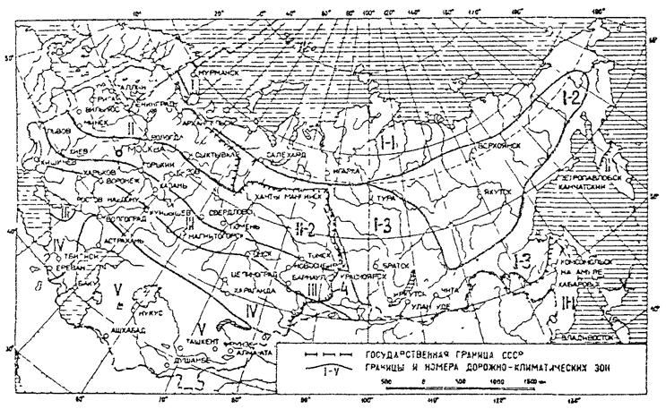
Схематическая карта дорожно-климатического районирования зоны вечной мерзлоты:
1-1 - северный район низкотемпературных вечномерзлых грунтов (НТВМГ) сплошного распространения, 1-2 - центральный район НТВМГ сплошного распространения; 1-3 - южный район высокотемпературных вечномерзлых грунтов (ВТВМГ) сплошного и островного распространения; 4 - южная граница распространения вечномерзлых грунтов.
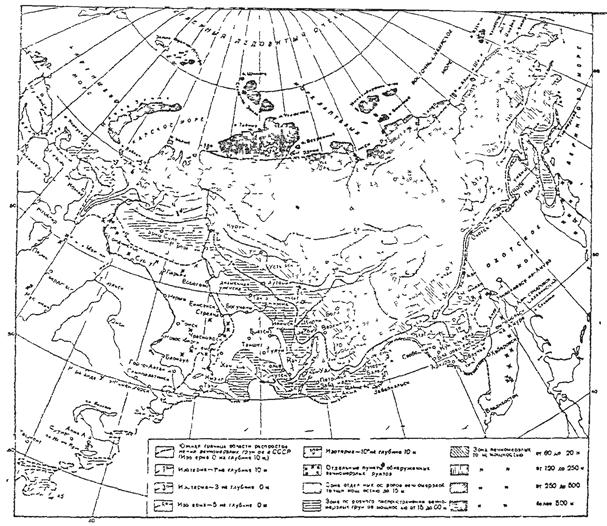
Обозначение. _._._._ - Государственная граница СССР.
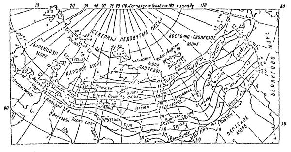
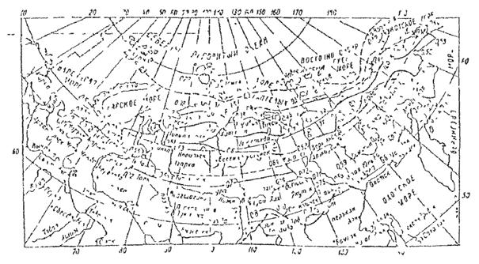
|
Характеристики мерзлых грунтов |
Грунты |
Льдогрунтовая масса |
|||
|
сыпучемерзлые |
сухомерзлые |
твердомерзлые |
льдонасыщенные |
||
|
1 |
2 |
3 |
4 |
5 |
6 |
|
1 Суммарная влажность (льдистость), % |
0 - 3 |
3 - 6 |
7 - 17 (20) |
21 - 38 |
38 - 99 |
|
Степень водонасыщения (льдонасыщения) |
0 - 0,01 |
0,01 - 0,1 |
0,1 - 0,8 |
0,8 - 0,9 |
0,9 |
|
Коэффициент пористости |
0,48 - 0,63 |
0,5 - 0,66 |
0,56 - 0,71 |
0,71 - 0,9 |
0,9 |
|
Коэффициент просадочности при оттаивании (термопросадочность) |
0 |
0 - 0,01 |
0,01 - 0,04 |
0,05 - 0,2 |
0,2 |
|
Тип льда - цемента (криогенная структура) |
Контактный |
Контактный и пле- |
Пленочный и поровый |
Поровой и базальный |
Базальный |
|
Тип криогенной текстуры |
- |
Массивная |
Массивная |
Массивная редко слоистая и сетчатая |
Сетчатая (блоковая) |
|
Прочность на раздавливание, МПа |
0 - 1 |
1 - 30 |
9 - 20 |
9 - 15 |
|
|
Прочность по ударнику СоюздорНИИ (при температуре -5 °С) |
10 |
10 - 200 |
100 - 200 |
100 - 150 |
|
|
Наименование по СНиП 2.04.05-89 ГОСТ 25100-82 |
Сыпучемерзлые |
Твердомерзлые |
Пластичномерзлые |
||
|
Тип (категория) грунтов основания земляного полотна |
Категория термопросадочности грунта при оттаивании |
Относительная осадка оттаивающего грунта, в долях единицы |
Основные виды и состояние грунтов основания при оттаивании |
|
1 |
2 |
3 |
4 |
|
I |
Непросадочные |
d < 0,03 |
Скальные, крупнообломочные и песчаные грунты, глинистые грунты твердой и полутвердой консистенции |
|
II |
Малопросадочные |
0,03 < d < 0,1 |
Глинистые грунты тугопластичной, мягкопластичной и текучепластичной консистенции, песчаные и крупнообломочные вечномерзлые грунты с глинистым заполнителем |
|
III |
Просадочные |
0,1 < d < 0,4 |
Торфяные и глинистые грунты текучепластичной и текучей консистенции, крупнообломочные, песчаные вечномерзлые грунты с прослойками льда толщиной до 0,1 м |
|
IV |
Сильнопросадочные |
d > 0,4 |
Глинистые грунты текучей консистенции и торфяные отложения, в том числе крупнообломочные и песчаные грунты с наличием подземного льда толщиной более 0,1 м |
|
Примечание. Относительная осадка определяется расчетом согласно СНиП 11-18-76 или по данным инженерно-геологических исследований грунтов. |
|||
|
Категория термопросадочности грунтов при оттаивании |
Относительная просадочность d, доли ед. |
Льдистость грунта Ji |
Суммарная влажность грунта Wf сезонноталого слоя, доли ед. |
|||
|
пески мелкие |
пески пылеватые, супеси легкие |
супеси |
торф |
|||
|
I - непросадочные |
0 - 0,01 |
Без ледяных включений (0 - 0,01) |
< 0,18 |
< 0,2 |
< 0,2 |
- |
|
II - малопросадочные |
0,01 - 0,2 |
Малольдистый (0,01 - 0,1) |
0,18 - 0,25 |
0,2 - 0,4 |
0,2 - 0,4 |
< 2 |
|
III - просадочные |
0,1 - 0,4 |
Льдистый (0,1 - 0,4) |
0,25 |
0,4 |
0,4 |
2 - 12 |
|
IV - сильнопросадочные |
0,4 - 0,6 |
Сильнольдистый (0,4 - 0,5) |
> 1,1 |
12 |
||
|
V - чрезмерно просадочные |
0,6 - 1 |
С крупными включениями подземного льда (0,6 - 1,0) |
> 1,1 |
12 |
||
|
Разновидность песчаных грунтов |
Условия разработки |
Содержание мерзлых комьев крупнее 25 см при разработке, % |
Условия применения |
Минимальный коэффициент уплотнения |
Относительная осадка при оттаивании в насыпи, доли ед. |
|
|
в мерзлом состоянии |
после оттаивания |
|||||
|
Сыпучемерзлый Wf < 3 % |
Без рыхления |
0 |
Без ограничений |
0,95 |
0,95 |
0 |
|
Сухомерзлый 3 % < Wf < 7 % |
То же |
< 50 |
Размер мерзлых комьев не должен превышать 30 см |
0,92 |
0,95 |
0,03 |
|
Твердомерзлый 7 % < Wf < 22 % |
С предварительным рыхлением |
50 - 80 |
В смеси с сыпучемерзлым грунтом. В нижней части насыпи содержание мерзлых комьев до 30 см - не более 50 % |
0,87 |
0,95 |
0,08 |
|
Пластичномерзлый Wf > 22 % |
С предварительным рыхлением |
> 80 |
Только для заготовки в бурты с последующим оттаиванием и просушкой |
Не нормируется |
||
|
Примечание. Wf - суммарная влажность |
||||||
|
Разновидность песчаных грунтов по степени цементации льдом и льдистости |
Суммарная влажность |
Степень заполнения льдом и водой пор мерзлых грунтов |
Коэффициент пористости |
Коэффициент просадочности при оттаивании |
Криогенная текстура |
Степень влажности при оттаивании |
|
Сыпучемерзлый |
< 3 |
0,0 - 0,01 |
0,48 - 0,63 |
0 |
Отсутствует |
Воздушносухой |
|
Сухомерзлый |
3 - 7 |
0,01 - 0,1 |
0,5 - 0,66 |
0 - 0,01 |
Массивная |
Маловлажный |
|
Твердомерзлый, малольдистый |
7 - 22 |
0,1 - 0,8 |
0,56 - 0,71 |
0,01 - 0,04 |
Массивная и сетчатая |
Маловлажный и влажный |
|
Пластично-мерзлый и льдистый |
> 22 |
0,8 |
> 0,71 |
> 0,04 |
Слоисто-сетчатая |
Водонасыщенный |
|
Ландшафт, вид грунта и мощность мохово-растительного покровного слоя, см |
Осадки, см |
||
|
За строительный период (3 - 5 мес.) |
На второй год эксплуатации |
На третий год эксплуатации (конечные) |
|
|
1 |
2 |
3 |
4 |
|
Тундровые ландшафты со сливающейся мерзлотой |
|||
|
Лишайниково-пятнистая и каменисто-лишайниковая тундры, на моревых суглинках, 0 - 5 |
10 - 13 |
14 - 17 |
15 - 19 |
|
Кочковато-богульниковая и мелко-ерниковая тундры, на покровных супесях, 5 - 15 |
16 - 19 |
15 - 21 |
14 - 23 |
|
Кочковато-ерниковая тундра на покровных и аллювиальных суглинках и супесях, 15 - 30 |
15 - 25 |
20 - 28 |
20 - 31 |
|
Ерниково-моховая горная и предгорная осоково-сфагновая тундры, на мореных суглинках, 15 - 50 |
18 - 26 |
18 - 31 |
23 - 36 |
|
Торфяной бугор торфяно-бугристой тундры, на озерно-ледниковых и аллювиальных супесях и суглинках, с торфом 60 - 100 |
15 - 22 |
17 - 24 |
20 - 27 |
|
Лесотундровые ландшафты с несливающейся мерзлотой |
|||
|
Редколесье березово-еловое и лиственничное на покровных супесях и суглинках, 5 - 15 |
15 - 18 |
20 - 22 |
21 - 25 |
|
Лес березово-еловый на покровных и аллювиальных суглинках и супесях, оторфованных, 15 - 40 |
15 - 23 |
20 - 25 |
22 - 30 |
|
Редколесье горное, березово-еловое на аллювиально-делювиальных и аллювиальных супесях и суглинках, 5 - 30 |
10 - 16 |
13 - 17 |
15 - 17 |
|
Лес горный, березово-еловый, на аллювиальных и аллювиально-делювиальных супесях и суглинках, 20 - 35 |
18 - 29 |
25 - 30 |
27 - 32 |
|
Луговые ландшафты с несливающейся мерзлотой |
|||
|
Пойма ивово-луговая на аллювиальных супесях и суглинках, с дерновым слоем 10 - 20 |
20 - 29 |
25 - 32 |
30 - 35 |
|
Ерниково-луговая горная тундра, на мореных суглинках, с дерновым слоем, 5 - 10 |
18 - 23 |
20 - 24 |
21 - 25 |
|
Болотные ландшафты с несливающейся мерзлотой |
|||
|
Болото на пойме, на аллювиальных супесях и суглинках, 5 - 15 |
30 - 37 |
30 - 41 |
35 - 44 |
|
Горно-ложбинное луговое и моховое болото на переотложенных мореных суглинках, с очесом и мхом, 5 - 10 |
30 - 40 |
35 - 46 |
45 - 52 |
|
Ивовая полоса стока, на овражно-аллювиальных и оторфованных суглинках с осоковыми кочками до 40 |
35 - 42 |
38 - 46 |
48 - 51 |
|
Болото в торфяно-бугристой тундре на озерно-ледниковых и аллювиальных оторфованных супесях и суглинках, с торфом до 100 |
50 - 59 |
60 - 69 |
75 - 80 |
|
Примечание. Меньшие значения осадок наблюдаются при отсыпке насыпей в зимний период (ноябрь - апрель), а большие - в летне-осенний (май - октябрь). |
|||
|
Характеристика геотекстилей |
Единица измерения |
Ватин синтетический хозяйственный |
Дорнит Ф-1 |
Дорнит Ф-2 |
|
1 |
2 |
3 |
4 |
5 |
|
Масса |
г/м2 |
700 ± 50 |
600 |
550 ± 50 |
|
Толщина |
мм |
5 |
4 ± 1 |
4 ± 1 |
|
Ширина |
» |
1700 |
1700 |
2000 - 2500 |
|
Длина в рулоне |
м |
10 - 40 |
75 - 100 |
75 - 100 |
|
Прочность на разрыв в направлении: |
||||
|
продольном |
МПа/см |
1,6 |
1 |
0,7 - 1 |
|
поперечном |
» |
1,2 |
0,8 |
0,5 - 0,8 |
|
Удлинение при разрыве в направлении: |
||||
|
продольном |
% |
65 |
70 |
60 - 80 |
|
поперечном |
» |
120 |
120 |
110 - 140 |
|
Размер частиц, проходящих через материал |
мм |
0,01 |
< 0,005 |
< 0,005 |
|
Коэффициент фильтрации (вертикальная водопроницаемость) |
м/сут |
10 - 30 |
20 - 30 |
25 - 35 |
|
Горизонтальная водопроницаемость (вдоль слоя материала) |
» |
20 - 70 |
70 - 100 |
70 - 120 |
|
Цена |
руб./м2 |
1,1 |
1,9 |
1,8 |
|
Сырье |
Лавсановое (полиэфирное) волокно |
Штапельное волокно (полиэфирные, полиамидные, полиакрилонитрильные) |
Капроновое, лавсановое волокно 40 %, нитриновое волокно 40 %, образки тканей 20 % |
ОБЛАСТИ ПРИМЕНЕНИЯ ГЕОТЕКСТИЛЕЙ
При строительстве дорог геотекстиль применяют:
для предупреждения деформаций основной площадки земляного полотна;
с целью усиления устойчивости насыпи на слабом основании (торф, ил, сапропели);
в качестве покрытия основной площадки насыпи из крупноглыбовых материалов;
для обеспечения водоотвода с основной площадки и откосов насыпей и выемок с целью предупреждения пучин и деформаций земляного полотна.
Дорнит изготавливается по техническим условиям «Полотно иглопробивное для дорожного строительства» ТУ 21-29-81, тип I, который предназначен для дорог повышенной несущей способности. При устройстве комбинированного покрытия совместно с геотекстилем используют водонепроницаемую пленку, например поливинилхлоридную марки «В» по ГОСТ 16272-79 с характеристиками: ширина - св. 0,7 м, толщина - св. 0,002 м, разрушающее напряжение - более 10 МПа, водопроницаемость за 24 ч менее 1,1 м2/см3 и морозостойкость при изгибе минус 25 °С.
Рис. 1. Конструкция насыпи высотой более 1,5 м на вечномерзлых грунтах I и II категории термопросадочности
1 - пенопласт; 2 - суглинок толщиной 0,2 м; 3 - торфопесчаная смесь толщиной 0,2 м; 4 - талые и сухомерзлые песчаные грунты; 5 - мохово-растительный слой; 6 - поверхность горизонта вечной мерзлоты до постройки насыпи; 7 - новообразованная поверхность мерзлоты под насыпью; Нр - высота насыпи по расчету
Рис. 2. Конструкция насыпи высотой более 1,5 м на вечномерзлых грунтах III - IV категории термопросадочности с бермами и укладкой геотекстиля
1 - торфопесчаная смесь толщиной 0,2 м; 2 - берма; 3 - геотекстиль; 4 - грунт насыпи; 5 - мохово-растительный слой; 6 - поверхность горизонта вечной мерзлоты до постройки; 7 - новообразованная поверхность мерзлоты; Нр - высота насыпи по расчету; hб - глубина сезонного протаивания грунтов
Рис. 3. Конструкция насыпи высотой 2 - 3 м на вечномерзлых грунтах IV и более категорий термопросадочности (торфяных буграх пучения) с заменой торфа в основании на дренирующий грунт и устройством теплоизоляции из торфа на откосах
1 - торф; 2 - грунт насыпи; 3 - поверхность горизонта вечной мерзлоты до постройки насыпи; 4 - новообразованная поверхность мерзлоты; hз - толщина замены дренирующим грунтом; Нр - высота насыпи по расчету
Рис. 4. Конструкция насыпи высотой менее 1,5 м на вечномерзлых грунтах III и IV категории термопросадочности из талых, сыпуче- и сухомерзлых песчаных грунтов, проектируемой на станции и погрузочно-разгрузочных пунктах, с заменой грунтов в основании насыпи на дренирующий грунт и применением геотекстиля
1 - мохово-растительный слой; 2 - геотекстиль; 3 - грунт насыпи; 4 - дренирующий грунт; 5 - торфопесчаная смесь толщиной 0,15 м; 6 - дрена или трубофильтр; 7 - поверхность горизонта вечной мерзлоты до постройки насыпи; 8 - новообразованная поверхность мерзлоты; hз - глубина замены грунта основания насыпи на дренирующий; 9 - граница отвода земель; Нр - высота насыпи по расчету
Рис. 5. Конструкция выемки глубиной до 6 м на вечномерзлых грунтах III категории термопросадочности с заменой на дренирующий грунт и термоизоляцией откосов пенопластом или торфом
1 - поверхность горизонта вечной мерзлоты до сооружения выемки; 2 - новообразованная поверхность мерзлоты; 3 - мохово-растительный слой; 4 - валик из грунта; 5 - пенопласт или торф по расчету; 6 - торфопесчаная смесь; 7 - дренирующий грунт; hз - глубина замены на дренирующий грунт
Рис. 6. Конструкция выемки глубиной до 6 м в вечномерзлых глинистых грунтах и песках пылеватых I и II категории термопросадочности, а также в гравийных грунтах с супесчаным заполнителем III категории термопросадочности, с заменой грунта на дренирующий
1 - поверхность горизонта вечной мерзлоты до постройки выемки; 2 - новообразованная поверхность мерзлоты; 3 - мохово-растительный слой; 4 - валик из грунта; 5 - торфопесчаная смесь; 6 - закюветная полка; 7 - дренирующий грунт; 8 - осадка основания земляного полотна
Рис. 7. Конструкция насыпи высотой 1,5 - 3 м на вечномерзлых грунтах III и IV категории термопросадочности или на участках с близким от поверхности залеганием подземных льдов, с термоизоляционным слоем из геотекстиля в обойме и утепленными откосами из торфа
1 - лед; 2 - мохово-растительный слой; 3 - торф; 4 - торфопесчаная смесь; 5 - геотекстиль; 6 - сыпучемерзлый песок; 7 - грунт насыпи; 8 - поверхность вечной мерзлоты до постройки насыпи; 9 - новообразованная поверхность мерзлоты; Нр - высота насыпи по расчету
Рис. 8. Конструкция насыпи высотой более 3 м на талых грунтах, залегающих на участках с отсутствием вечной мерзлоты или ее глубоким залеганием на талых сухо- или сыпучемерзлых грунтах
1 - мохово-растительный покров; 2 - торфогрунтовая смесь; 3 - геотекстиль; 4 - грунт насыпи; Нр - высота насыпи по расчету 5 - осадка насыпи
Рис. 9. Конструкция насыпи высотой более 1,5 м на вечномерзлых грунтах I и II категории термопросадочности, проектируется по II принципу строительства на застроенных территориях, из талых, сыпуче- или сухомерзлых песчаных грунтов
1 - мохово-растительный слой; 2 - пенопласт или торф; 3 - железобетонный лоток; 4 - грунт насыпи; 5 - укрепление канавы железобетонными плитами; 6 - поверхность горизонта вечной мерзлоты до постройки насыпи; 7 - новообразованная поверхность мерзлоты; 8 - осадка основания насыпи; Нр - расчетная высота насыпи
Рис. 1. Конструкция насыпи высотой более 1,5 м на вечномерзлых грунтах IV и V категории термопросадочности из дренирующих грунтов
1 - торф насыпной; 2 - новообразованная мерзлота; 3 - грунт насыпи; 4 - берма; 5 - мохово-растительный слой; 6 - поверхность вечной мерзлоты до постройки; Нр - расчетная высота насыпи
Рис. 2. Конструкция насыпи высотой более 1,5 м на вечномерзлых грунтах IV - V категории термопросадочности с термоизоляцией
а - из слоя торфа; б - пенопласта; 1 - торф насыпной; 2 - грунт насыпи; 3 - пенопласт; 4 - выравнивающий песчаный слой толщиной 0,1 - 0,15 м; 5 - мохово-растительный слой; 6 - поверхность вечной мерзлоты до постройки насыпи; 7 - новообразованная мерзлота; Нр - расчетная высота насыпи
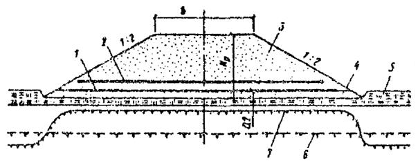
Рис. 3. Конструкция насыпи высотой более 1,5 м на грунтах III, IV и V категорий термопросадочности из талых, сыпуче- или сухомерзлых песчаных грунтов с применением геотекстиля
1 - геотекстиль, укладываемый в продольном направлении оси дороги; 2 - то же, в поперечном; 3 - грунт насыпи; 4 - выравнивающий песчаный слой; 5 - мохово-растительный слой; 6 - поверхность вечной мерзлоты до постройки насыпи; 7 - новообразованная мерзлота; Нр - расчетная высота насыпи
Рис. 4. Конструкция насыпи высотой более 1,5 м на грунтах III категории термопросадочности из сухих, талых, сыпуче- или сухомерзлых песчаных грунтов; нижняя часть насыпи заключается в полуобойму из геотекстиля
1 - полуобойма; 2 - геотекстиль; 3 - грунт насыпи; 4 - выравнивающий песчаный слой; 5 - мохово-растительный слой; 6 - поверхность вечной мерзлоты до постройки насыпи; 7 - новообразованная мерзлота; Нр - расчетная высота насыпи
Рис. 5. Конструкция насыпи высотой более 1,5 м на грунтах IV и V категории термопросадочности из талых, сыпуче- или сухомерзлых песчаных грунтов и суглинков в обойме из геотекстиля
1 - суглинок; 2 - геотекстиль; 3 - грунт насыпи; 4 - выравнивающий песчаный слой; 5 - мохово-растительный слой; 6 - поверхность вечной мерзлоты до постройки насыпи; 7 - новообразованная мерзлота
Рис. 6. Конструкция насыпей высотой более 1,5 м на грунтах II и III категории термопросадочности
а - из недренирующих и б - дренирующих грунтов; 1 - канава; 2 - природоохранная полоса; 3 - недренирующий грунт; 4 - дренирующий грунт; 5 - мохово-растительный слой; 6 - поверхность вечной мерзлоты до постройки насыпи; 7 - новообразованная мерзлота; S - осадка основания насыпи; Нр - расчетная высота насыпи
Рис. 7. Конструкция земляного полотна дорог на застраиваемой территории, на грунтах III и IV категории термопросадочности с заменой на дренирующий грунт
1 - граница отвода земель; 2 - дренирующий грунт; 3 - покрытие дороги; 4 - канава, укрепленная железобетонными плитами; 5 - поверхность вечной мерзлоты до постройки дороги; 6 - новообразованная мерзлота; hз - глубина замены грунта на дренирующий; отм. пл. - отметка планировки
Рис. 8. Конструкция земляного полотна дорог на застраиваемой территории, на грунтах IV и V категории термопросадочности с заменой на дренирующий грунт и с термоизолирующим слоем
1 - граница отвода земель; 2 - дренирующий грунт; 3 - покрытие; 4 - канава, укрепленная железобетонными плитами; 5 - поверхность вечной мерзлоты до постройки дороги; 6 - новообразованная мерзлота; hз - глубина замены грунта на дренирующий; отм. пл. - отметка планировки
Рис. 1. Конструкции земляного полотна дороги в отметках планировки без кюветов
а - с двускатным профилем проезжей части; б - с односкатным профилем проезжей части; 1 - дренажная труба; 2 - то же, в месте выхода трубы в колодец ливневой канализации; 3 - бордюрный камень; iк - уклон дна корыта
Рис. 2. Конструкции земляного полотна дороги на планируемой территории
а - отметки дороги подняты над отметками планировки территории; б - то же, в одном уровне с планировкой; в - кюветы с одной стороны; г - без кюветов и без трубчатых дрен; д - то же, с трубчатыми дренами; 1 - обочина; 2 - трубчатая дрена; 3 - то же, в месте выпуска воды в ливневую канализацию; 4 - откосный дренаж; отм. пл. - отметка планировки территории; iк - уклон дна корыта; iо - уклон поверхности обочины
Рис. 3. Конструкции земляного полотна дороги на границе планировки или террасы в выемке
а - с кюветом со стороны откоса; б - с кюветом со стороны планировки территории; в - кювет с лотком со стороны откоса в стесненных условиях; 1 - трубофильтр (показан условно); 2 - лоток железобетонный; 3 - обочина; 4 - кювет; 5 - железобетонные плиты; отм. пл. - отметка планировки территории; iк - уклон дна корыта
Рис. 4. Конструкции земляного полотна дорог на границе планировки или террасы в насыпи
а - без кювета; б - с трубчатым дренажем ; в - с кюветом; г - без трубчатого дренажа; 1 - трубчатая дрена (трубофильтр); 2 - то же, в месте выхода в ливневую канализацию; 3 - обочина; 4 - песчаный слой; h - толщина дренирующего слоя; iк - уклон дна корыта
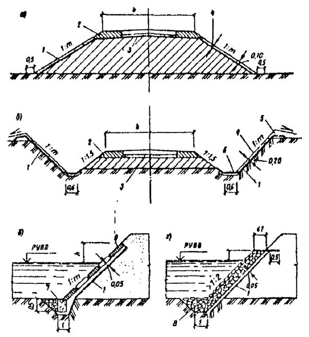
Рис. 1. Конструкции земляного полотна дорог на границе планировки или террасы в насыпи
а - неподтопляемые откосы; б - обводненные выемки ; в, г - подтопляемые откосы; 1 - геотекстиль; 2 - укрепленная обочина; 3 - выравнивающий песчаный слой; 4 - слой растительного грунта для посева травами; 5 - банкет; 6 - дно канавы, покрытое геотекстилем; 7 - бетонный брус (упор); 8 - каменная наброска; 9 - бетонные плиты или бетонная решетчатая конструкция; РУВВ - расчетный уровень высоких вод
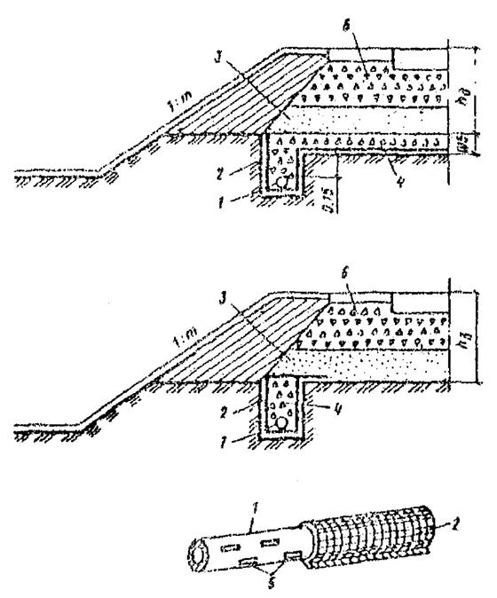
Рис. 1. Конструкции дренажей мелкого заложения с использованием геотекстилей
1 - асбоцементная труба; 2 - геотекстиль; 3 - песок мелкий с коэффициентом фильтрации не менее 2 м/сут; 4 - щебень; 5 - щели в трубе; 6 - щебень подстилающего слоя; kц - мощность слоя дорожной одежды
Рис. 2. Конструкции откосного дренажа с применением геотекстиля
а - поперечный разрез; б - расположение дренажей в плане; в - деталь дренажа глубокого заложения; 1 - дренаж с геотекстилем; 2 - геотекстиль, уложенный на откосе; 3 - граница переувлажненных грунтов; 4 - насыпной грунт; 5 - ось дороги; 6 - ось подкюветная дренажа; 7 - откосный дренаж с геотекстилем; 8 - геотекстиль; 9 - щебень (гравий); 10 - песок с гравием; 11 - полиэтиленовая пленка; 12 - глинистый грунт утрамбованный; 13 - труба асбоцементная; Н - высота дренажной обсыпки по проекту
Таблицу проверить
|
Ландшафтный тип |
Превалирующий тип грунта |
Приуроченность ландшафтного типа к основному рельефу |
Мощность сезонного слоя, м |
Мощность покрова |
||
|
промерзания |
оттаивания |
мохово-торфянистого |
снежного |
|||
|
I. Тундровые ландшафтные типы с сезоннопротаивающим слоем |
||||||
|
Лишайниково-пятнистая тундра |
Верхне-моренные суглинки и супеси с гравием |
Бровки склонов увалов и моренных гряд |
- |
1,7 - 2,0 |
0 - 0,1 |
0,1 - 0,2 |
|
Кочковато еринковые тундры |
Покровные суглинки и супеси |
Ровные участки водоразделов, высокие террасы |
- |
1,5 - 1,8 |
0,1 - 0,3 |
0,2 - 0,3 |
|
Предгорная пеньково-сфагновая тундра |
Верхне-моренные суглинки с галькой и гравием |
Ровные участки на пологих склонах моренных гряд |
- |
1,5 - 2,0 |
0,2 - 0,5 |
0,5 - 0,9 |
|
Ерниково-моховая горная тундра |
Нижне-моренные суглинки с гравием и валунами |
Ложбины среди моренных гряд |
- |
1,2 - 1,5 |
0,15 - 0,3 |
0,3 - 0,5 |
|
Бугор пучения торфяно-бугристой тундры |
Озерно-ледниковые и аллювиальные супеси и суглинки |
Древние депрессии на водоразделах, высокие террасы |
- |
0,6 - 1,1 |
торф 0,3 - 0,1 |
до 0,2 |
|
II. Лесотундровые ландшафтные типы с сезоннопромерзающим слоем |
||||||
|
Елово-березово-еринковое редколесье равнинных территорий |
Покровные суглинок и супеси |
Подошвы пологих склонов и высокие террасы |
0,5 - 1,0 |
- |
0,05 - 0,2 |
0,7 - 1,1 |
|
Елово-березовый лес равнинных территорий |
Покровные и аллювиальные суглинки и супеси |
Высокие террасы, склоны и подошвы водоразделов |
0,5 - 1,5 |
- |
0,2 - 0,35 |
0,7 - 1,3 |
|
Горые леса и редколесья |
Нижне-моренные и аллювиальные суглинки с валунами |
Нижние части склонов и высокие террасы |
0,5 - 2,0 |
- |
0,2 - 0,3 |
0,5 - 2,2 |
|
III. Луговые ландшафтные типы с сезоннопромерзающим слоем |
||||||
|
Поймы ?-луговые и залесенные |
Аллювиальные суглинки и супеси |
Поймы, надпойменные террасы |
0,2 - 2,2 |
- |
дерн 0,1 - 0,2 |
0,9 - 3,5 |
|
Ерниково-луговая горная тундра |
Верхне-моренные суглинки с редкими валунами |
Пологие части горных склонов |
0,5 - 1,5 |
- |
дерн 0,05 - 0,3 |
1,0 - 2,4 |
|
IV. Болотные ландшафтные типы с сезоннопромерзающим слоем |
||||||
|
Болота в поймах |
Аллювиальные илистые суглинки и супеси |
Поймы |
0,3 - 0,6 |
- |
торф 0,4 - 1,1 |
0,9 - 1,25 |
|
Полосы стока |
Озерно-аллювиальные илистые суглинки |
Понижения на склонах водоразделов и высоких террас |
0,3 - 0,8 |
- |
торф 0,4 - 0,9 |
1,2 - 2,5 |
|
Горно-ложбинные луговые и моховые болота |
Переотложенные моренные илистые суглинки |
Ложбины среди моренных гряд и холмов |
0,4 - 1,0 |
- |
торф 0,45 - 1,0 |
1,0 - 2,0 |
|
? торфяно-бугристой тундры |
Озерно-аллювиальные илистые суглинки |
Термокарстовые болота на водоразделах |
0,3 - 0,5 |
- |
торф 1,6 - 1,3 |
1,2 - 2,3 |
Расчет выполняют по методике, приведенной в ВСН 61-89
Н = Кс hp + Dh,
где Н - высота снегонезаносимой насыпи;
Кс - коэффициент, определяемый по формуле
Кс = 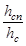
hсп - высота снежного покрова на данном ландшафте, пересекаемым трассой в конце зимы, определяемая по приложению 17;
hc - высота снежного покрова по данным замеров на площадке метеостанции;
hр - расчетная высота снежного покрова с учетом вероятности превышения на 5 %, принимаемая по данным наблюдений на ближайшей к трассе метеостанции;
Dh - возвышение бровки насыпи над поверхностью снежного покрова, в конце зимы, принимаемый для дорог II категории - 0,7 м, III - 0,6, IV - 0,5 и V - 0,4 м.
Таблица 18.1
Значения коэффициента Кс
|
Направление господствующего ветра зимой |
Крутизна склона с заложением от - до |
Кс |
|
|
Водораздельное плато |
Вдоль трассы, под углом не более 30° к оси |
1:3 ¸ 1:10 |
0,2 |
|
Вкрест простирания к оси трассы и более 30° |
1:3 ¸ 1:10 |
0,3 |
|
|
Верхние части склонов |
Наветренная сторона, перпендикулярно к оси трассы |
1:15 ¸ 1:20 |
0,55 - 0,8 |
|
Подветренная сторона, перпендикулярно к оси трассы |
1:15 ¸ 1:20 |
0,8 - 0,9 |
|
|
Нижние части склонов |
Наветренная сторона |
1:10 ¸ 1:50 |
0,9 - 1,0 |
|
Подветренная сторона |
1:10 ¸ 1:50 |
1,0 - 1,1 |
|
|
Подошвы склонов |
Наветренная сторона |
1:50 ¸ 1:100 |
1,2 - 1,3 |
|
Подветренная сторона |
1:50 ¸ 1:100 |
Более 2,0 |
Проверить всю таблицу
|
Условные обозначения показателей |
Размерность |
Наименование показателей |
Расчетные формулы |
|
Wc |
Доли единиц |
Суммарная влажность |
Wc = Wг + Wн + Wн |
|
Wг |
То же |
Влажность грунта (или минеральных прослоек) |
Wг = Wн + Wн » Wр |
|
Wн |
» |
Количество незамерзшей воды |
Wн = Кн Wр |
|
Лс |
» |
Льдистость суммарная |
Лс = Лл + Лц |
|
Лл |
» |
Льдистость за счет ледяных включений |
Лл = 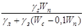 |
|
Лц |
» |
Льдистость за счет льда цемента |
Лц = 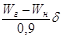 |
|
d |
г/см2 |
Объемная масса скелета грунта |
d
= 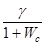 |
|
b |
Отвлеченная величина |
Коэффициент пористости |
b = 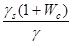 b = 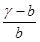 |
|
G |
То же |
Степень заполнения пор мерзлого грунта льдом и незамерзшей водой |
G = 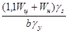 |
|
Vo |
» |
Объем газов в единице объема грунта |
Vo = 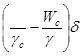 |
|
iр |
Доля единиц |
Число пластичности |
iр = WL - Wp |
|
iL |
То же |
Показатель консистенции |
iL = 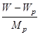 |
|
h |
» |
Показатель относительного сжатия |
H = 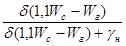 |
|
Описание пород |
Температура грунта на глубине 10 м |
Плотность скелета, rs, г/см3 |
Объемная масса, g г/см3 |
Пластичность |
Суммарная влажность Wс |
|
|
верхний предел, WL |
нижний предел, Wр |
|||||
|
1 |
2 |
3 |
4 |
5 |
6 |
7 |
|
Игарские ленточные глины |
-0,5 |
2,77 |
1,87 |
0,58 |
0,29 |
0,34 |
|
Салехардские глины слоистой текстуры |
-0,5 |
2,71 |
1,65 |
0,47 |
0,27 |
0,45 |
|
Воркутинские глины массивной текстуры |
-0,6 |
2,65 |
1,85 |
0,28 |
0,10 |
0,28 |
|
Игарские суглинки, средние, пылеватые, массивной текстуры |
-1,0 |
2,77 |
1,82 |
0,39 |
0,22 |
0,33 |
|
Надымские озерно-аллювиальные пески массивной текстуры |
-2,0 |
2,65 |
2,00 |
- |
- |
0,20 |
|
Игарские глины сетчатой текстуры |
-1,5 |
2,77 |
1,71 |
0,46 |
0,13 |
0,40 |
|
Игарские глины слоистой текстуры |
-0,5 |
2,78 |
1,63 |
0,41 |
0,21 |
0,55 |
|
Игарская озерно-ледниковая супесь, пылеватая |
-0,9 |
2,79 |
1,96 |
0,21 |
0,15 |
0,25 |
|
Надымские морские суглинки массивной текстуры |
-1,0 |
- |
1,94 |
0,29 |
0,15 |
0,23 |
|
Надымские суглинки массивной текстуры |
-1,5 |
2,70 |
1,84 |
0,29 |
0,16 |
0,31 |
|
Надымские глины слоистой текстуры |
-1,8 |
2,74 |
1,52 |
0,58 |
0,28 |
0,58 |
|
Пунгские суглинки сетчатой текстуры |
-0,6 |
2,72 |
1,61 |
0,45 |
0,29 |
0,43 |
|
Воркутинские суглинки массивной текстуры |
-0,8 |
2,78 |
1,76 |
0,18 |
0,13 |
0,23 |
|
Воркутинские суглинки слоистой текстуры |
-1,0 |
2,75 |
1,52 |
0,44 |
0,29 |
0,43 |
|
Воркутинские суглинки сетчатой текстуры |
-1,5 |
2,74 |
1,59 |
0,43 |
0,30 |
0,43 |
|
Надымские супеси массивной текстуры |
-1,0 |
2,70 |
1,64 |
0,26 |
0,20 |
0,34 |
|
Надымские супеси массивной текстуры |
-0,8 |
2,70 |
1,75 |
0,20 |
0,14 |
0,28 |
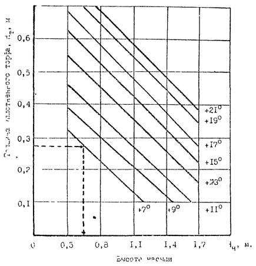
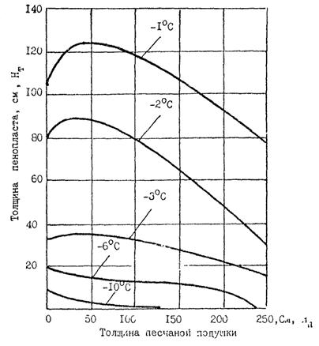
-1 °С - среднегодовая температура воздуха;
Нп - мощность песчаной подушки, см;
Нт - толщина пенопласта.
|
№ п/п |
Схема |
Первый год |
Второй год |
||
|
октябрь - май |
июнь - сентябрь |
октябрь - май |
июнь - сентябрь |
||
|
1 |
2 |
3 |
4 |
5 |
6 |
|
1 |
Одноэтапная схема скоростного строительства в зимнее время |
Сооружение автозимников. Отсыпка насыпей талыми, сухомерзлыми или сыпучемерзлыми грунтами из отдаленных карьеров или из заблаговременно заготовленных штабелей, сооружение водоотводов |
Планировка основной площадки и откосов, сдача насыпи под укладку верхнего строения пути (ВСП). Укрепление откосов |
Укладка ВСП. Рабочее движение. Возведение устройств инженерной защиты (снегозащиты, наледезащиты т.п.) |
Временная эксплуатация |
|
2 |
Одноэтапная схема скоростного строительства в летнее время |
Завоз горючесмазочных материалов и организация вахтовых поселков |
Заготовка талого и оттаиваемого грунта в карьерах. Отсыпка технологических автодорог. Отсыпка насыпей из талых грунтов с допустимым содержанием грунта до 30 % в верхней оттаивающей части насыпи и до 50 % в нижней части в пределах прогнозируемого мерзлого ядра. Планировка насыпей. Сдача под укладку ВСП. |
Укладка BCП. Рабочее движение. Укрепление откосов. Возведение устройств инженерной защиты |
Рабочее движение. Возведение устройств инженерной защиты. Временная эксплуатация |
|
3 |
Двухэтапная схема скоростного строительства в течение двух сезонов |
Устройство автозимников. Разработка твердомерзлых грунтов в карьерах и заготовка их в приобъектные бурты в объеме на 20 % больше профильного объема насыпи |
Послойная радиационная оттайка мерзлого грунта в буртах. Перемещение и послойная укладка с уплотнением талого грунта в насыпь. Планировка Сдача под укладку ВСП. Укрепление основной площадки |
Укладка ВСП. Рабочее движение. Укрепление откосов. Устройство инженерной защиты |
Рабочее движение. Устройство инженерной защиты. Временная эксплуатация |
|
4 |
Двухэтажная схема скоростного строительства в два сезона |
Устройстве автозимников. Заготовка твердомерзлых грунтов в приобъектные бурты в количестве 60 - 70 % профильных объемов |
Устройство технологических автодорог. Послойное оттаивание мерзлого грунта, перемещение его в насыпь, уплотнение. Досыпка насыпей до проектных очертаний талыми грунтами, разрабатываемыми в карьеpax. Планировка |
Укладка ВСП. Рабочее движение. Укрепление откосов. Сооружение инженерной защиты |
Рабочее движение. Временная эксплуатация. Сооружение инженерной защиты |
|
5 |
Двухэтапная схема строительства в течение трех сезонов |
Заготовка твердомерных грунтов в приобъектные бурты в количестве 60 - 70 % профильного объема |
Оттаивание мерзлого грунта в приобъектных буртах и уплотнение оттаявшего грунта. Послойная радиационная оттайка мерзлых грунтов в карьерах и заготовка недостающего объема талого грунта в бурты и штабели в карьерах |
Разработка штабелей заготовленного в карьерах талого грунта и досыпка насыпей до проектного профиля талым грунтом с допустимым содержанием комьев сухомерзлого или твердомерзлого грунта. Водоотводы. Планировка. Сдача под укладку ВСП. |
Укладка ВСП. Рабочее движение. Укрепление откосов. Инженерная защита |
|
6 |
Двухэтапная схема строительства в течение трех сезонов |
Подготовительные работы. Доставка оборудования, ГСМ, устройство вахтовых поселков |
Послойная разработка оттаивающих мерзлых грунтов и заготовка талых грунтов в бурты и в штабели, в том числе способом гидромеханизации |
Устройство автозимников. Разработка штабелей талого грунта и отсыпка до проектных отметок |
Послойная разработка грунта в карьерах. Досыпка насыпей до проектного профиля. Планировка. Укладка ВСП. Укрепление откосов |
1. Большаков С.М., Ефимов Ю.Г. Особенности возведения земляного полотна на наледных участках. В сб. науч. трудов ЦНИИСа. Исследование устойчивости земляного полотна железных дорог в районах вечной мерзлоты. - М.: ЦНИИС, 1987, с. 92 - 99.
2. Временные указания по усилению железнодорожного пути неткаными материалами. - М.: ЦНИИС, Минтрансстрой. Вып. 126, 1980, с. 57 - 103.
3. ВСН 61-89. Инженерные изыскания и проектирование железных дорог в условиях вечной мерзлоты. - М.: ЦНИИС, 1989, 206 с.
4. ВСН 84-89. Инструкция по изысканиям, проектированию и строительству автомобильных дорог в районах вечной мерзлоты. - М.: Минтрансстрой, 1989, 218 с.
5. ВСН 200-85. Проектирование и сооружение земляного полотна железнодорожной линии Ягельная - Ямбург. - М.: Минтрансстрой, 1985, 61 с.
6. ВСН 203-85. Специальные нормы и технические условия на проектирование и строительство железных дорог на полуострове Ямал.: М.: Минтрансстрой, МПС, 1986, 26 с.
7. ВСН 205-87. Проектирование земляного полотна железных дорог из глинистых грунтов с применением геотекстиля. - М.: Минтрансстрой, 1989, с.15.
8. ГОСТ 25358-82. Грунты. Метод полевого определения температуры. - М.: Изд-во Стандартов, 1982, с.9.
9. ГОСТ 26262-84. Методы полевого определения глубины сезонного оттаивания. - М.: Изд-во Стандартов, 1985. с. 5.
10. ГОСТ 24841-87. Методы полевого определения глубины сезонного промерзания. - М.: Изд-во Стандартов, 1982, с. 11.
11. ГОСТ 24586-81. Грунты. Методы лабораторного определения характеристик прочности и деформируемости мерзлых грунтов. - М.: Изд-во Стандартов, 1981, с. 8.
12. ГОСТ 32253-78. Грунты. Методы полевых испытаний мерзлых грунтов. - М.: Изд-во Стандартов, 1979, с. 8.
13. ГОСТ 25100-82. Грунты. Классификация. - М.: Изд-во Стандартов, 1982, с. 8.
14. Гулецкий В.В. Роль нетканых синтетических материалов в процессе стабилизации насыпей, возведенных на марях. В сб. науч. трудов ЦНИИСа. Исследование устойчивости земляного полотна железных дорог в районах вечной мерзлоты. - М., ЦНИИС, 1987, с. 56 - 59.
15. Инструкция по проектированию, строительству и эксплуатации противоналедных сооружений и устройств, ВСН (проект). - М.: ЦНИИС, 1988, 187 с.
16. Исследование устойчивости земляного полотна железных дорог в районах вечной мерзлоты. - М.: ЦНИИС. Сб. трудов под ред. Н.А. Перетрухина. 129 с., 1989
17. Канаев Ф.С. Расчет осадок оснований насыпей на Крайнем Севере. Транспортное строительство. 1987, № 11, с. 15 - 17.
18. Канаев Ф.С. Транспортные и гидротехнические сооружения с применением геотекстиля. - М., ВНИИНТПИ, 1989, 20 с.
19. Маслов В.А. Особенности сооружения земляного полотна на центральной части БАМа. - Тр. строительство, 1983, № 3, с. 7 - 9.
20. Меренков Н.Д. Основные причины и закономерности развития осадок оснований насыпей на термокарстовых участках пути. В сб. науч. трудов ЦНИИСа. Исследование устойчивости земляного полотна железных дорог в районах вечной мерзлоты. - М.: ЦНИИС, 1987, с. 50 - 55.
21. Методические рекомендации по проектированию земляного полотна железных дорог на пучинистых грунтах в суровых климатических условиях. - М.: ВНИИЖТ, 1986, 75 с.
22. Методические рекомендации по рекультивация земель, нарушенных при транспортном строительстве. - М.: ЦНИИС, 1983.
23. Минайлов Г.П., Гулецкий В.В. Пути повышения устойчивости насыпей, возводимых на маревых участках БАМа. - Тр. строительство, 1982, № 2.
24. Перетрухин Н.А., Меренков Н.Д. Устойчивость и стабилизация насыпей в пределах марей. - М.: ЦНИИС, 1987. В кн. Исследование устойчивости земляного полотна железных дорог в районах вечной мерзлоты. 1987, с.63 - 73.
25. Перетрухин Н.А. Инженерные методы прогноза. В сб. науч. трудов ЦНИИСа. Исследование устойчивости земляного полотна железных дорог в районах вечной мерзлоты. - М.: ЦНИИС, 1987, с. 4 - 13.
26. Полуновский А.Г. Геотекстильные материалы для дорожного строительства. Автомобильные дороги. - 1985, № 3, с. 18 - 19.
27. Положение о порядке передачи рекультивируемых земель, землепользователя предприятиями, организациями и учреждениями, разрабатывающими месторождения полезных ископаемых и торфа, проводящими геолого-разведочные, изыскательские, строительные и иные работы, связанные с нарушением почвенного покрова. - М.: Минсельхоз СССР. 1979, 35 с.
28. Пособие по проектированию земляного полотна и водоотвода железных и автомобильных дорог промышленных предприятий (к СНиП 2.05.07-85). М.: Союзпромтрансниипроект. Стройиздат. 305 с.
29. Рекомендации по охране окружающей среды при проектировании объектов промышленного транспорта. - М., Союзпромтрансниипроект. Вып. 5760, 1989. с. 203.
30. Пособие по проектированию земляного полотна автомобильных дорог на слабых грунтах (к СНиП 2.05.02-85). - М., Союздорнии. 1989, с. 191.
37. Пособие по инженерным изысканиям для проектирования железных и автомобильных дорог промышленных предприятий (к СНиП 2.05.07-85). - М., Союзпромтрансниипроект, 1989, с. 220.
32. Поташцев Т.В. Закономерности изменения мерзлотного грунтовых условий основания насыпей на островной мерзлоте. В сб. науч. трудов ЦНИИСа. Исследование устойчивости земляного полотна железных дорог в районах вечной мерзлоты. - М., ЦНИИС, 1987, с. 74 - 83.
33. Проектирование объектов промышленного и гражданского назначения Западно-Сибирского нефтегазового комплекса. РСН 68-87. - М., Госкомитет по строительству РСФСР, 1987, с. 279.
34. Рекомендации по производству опережающих исследований для строительства в районах распространения вечномерзлых грунтов. - М.: Стройиздат, 1986, 86 с.
35. Рекомендации по охране окружающей среды в районной планировке. - М.: Стройиздат, 1986, 159 с.
36. РСН 68-90. Проектирование объектов промышленного и гражданского назначения зоны БAM (проект). - М.: ЦНИИпромзданий, 1989, с. 231.
37. Рекомендации по инженерно-геологическим изысканиям для строительства мостов и труб на вечномерзлых грунтах Севера Тюменской области, включая Ямал. - М.: ЦНИИС, 1988, 80 с.
38. Рекомендации по расчету железобетонных свайных фундаментов, возводимых на вечномерзлых грунтах, с учетом температурных и влажностных воздействий. - М.: Стройиздат, 1981, 46 с.
39. РСН 09-85. Расчет дорожных насыпей на болотных грунтах. - Минск, Госстрой БССР, 1985, 79 с.
40. РСН 303-78. Руководство по технологии сооружения грунтовых оснований (земляного полотна) вдоль трассовых дорог в условиях вечной мерзлоты. - М., ЦНИИС, 1979.
41. Рубинштейн А.Я., Канаев Ф.С. Инженерно-геологические изыскания для строительства на слабых грунтах. - М.: Стройиздат, 1984, 107 с.
42. Светлов Л.П., Асмолов В.A. О совместной работе временного моста и насыпи на вечномерзлых грунтах. В сб. науч. трудов ЦНИИСа. Исследование устойчивости земляного полотна железных дорог в районах вечной мерзлоты. - М., ЦНИИС, 1987, с. 117 - 122.
43. Страмоус В.М., Дыдышко П.И. Укладка защитных нетканых материалов. Путь и путевое хозяйство. - 1986. № 12, c. 18 - 19.
44. СНиП 1.02.07-87. Инженерные изыскания для строительства. - М.: ЦИТП Госстроя СССР, 1988, 101 с.
45. СНиП 2.05.07-85. Промышленный транспорт. - М.: ЦИТП Госстроя СССР, 1988, 66 с.
46. СНиП 2.01.01-82. Строительная климатология. Геофизика. - М.: Стройиздат, 1983, 38 с.
47. СНиП 2.02.04-89. Основания и фундаменты на вечномерзлых грунтах. - М.: ЦИТП Госстроя СССР, 1989, 34 с.
48. Синтетические текстильные материалы в транспортном строительстве. Сб. под ред. В.Д. Казахновского. - М.: Транспорт, 1984, 159 с.
49. СНиП. Мосты и трубы. - М.: Стройиздат, 1985, с. 11.
50. Специальные нормы и технические условия на проектирование и строительство автомобильных дорог на полуострове Ямал. - М.: Минтрансстрой, 1986, 15 с.
51. Справочник по охране природы. Под ред. К.М. Митрюшкина. - М.: Лесная промышленность, 1985, 135 с.
52. Справочник по строительству на вечномерзлых грунтах - Л.: Стройиздат, 1977, 480 с.
53. Технологическая карта возведения земляного полотна с дренирующей и капилляропрерывающей прослойками из синтетических нетканых материалов. - М.: Минтрансстрой, ВПТКтрансстрой, 1985, 12 с.
54. Технические указания по применению нетканых материалов для усиления земляного полотна. - М.: Транспорт, 1989, с. 46.
55. Цуканов Н.А. Расчеты и регулирование глубины сезонного промерзания - оттаивания грунтов основания насыпей. В сб. науч. трудов ЦНИИСа. Исследование устойчивости земляного полотна железных дорог в районах вечной мерзлоты. - М.: ЦНИИС, 1987, с. 14 - 23.
56. Экспериментальный проект дорожных одежд и земляного полотна автомобильных дорог с применением нетканых материалов. - М.: Союздорпроект Минтрансстроя, 1985, 35 с.
СОДЕРЖАНИЕ